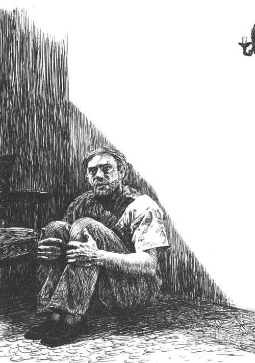

一艘巨大的客轮将于午夜时分从纽约开往布宜诺斯艾利斯。到处都笼罩着起航前一小时惯常的繁忙气氛——岸上，来送亲友远行的人们熙熙攘攘；歪戴着帽子的电报局伙计大声喊着客人的名字，穿梭于客舱之间，旅客们的行李和鲜花也都被带了上来；孩子们永远对一切都充满好奇，在楼梯上跑上跑下；乐队也在甲板上不知疲倦地演奏。我和一位朋友避开了船下的喧闹，站在甲板上聊天。这时我们旁边有闪光灯的灯光刺眼地闪了两三下——看起来好像是记者们要在某位名人临行前的最后几分钟紧张地进行采访和拍照。我的朋友向那边望了望便笑了。“他们在船上发现了一位少见的怪才，琴多维奇。”见我露出一副不解的神情，他又补充解释道：“米尔柯·琴多维奇，国际象棋世界冠军。他曾经在美国所有的象棋锦标赛中获胜，现在又要乘船到阿根廷去，参加新的比赛。”
我这才想起这位年轻的世界冠军，还有关于他青云直上的事业的一些细节。我的朋友读报纸比我还要仔细，所以他还知道很多关于此人的奇闻佚事。大约一年以前，琴多维奇一下子跻身如阿廖辛、卡帕布兰卡、塔塔科维尔、拉斯克、波戈留勃夫等久经沙场的棋坛名将的行列。自从七岁神童雷舍夫斯基一九二二年在纽约国际象棋锦标赛上一鸣惊人以来，还从来没有一个新手在闯入棋坛精英阵营时，会引起这么大的轰动，因为谁也不会预料到拥有糟糕智商的琴多维奇会有如此光明的前程。不久之后，他的秘密就被公之于众：这位世界棋坛冠军的个人生活简直一无是处。无论用哪一种语言，他都无法写出一句正确无误的话，就像被他惹恼的一位对手讽刺他的那样，“他在任何领域都缺乏教养”。他父亲是多瑙河上一名极其贫穷的南斯拉夫籍船夫。一天夜里，他的小船被一艘运粮食的轮船撞翻，他也随之丧命了。一个偏僻的小山村的神父出于怜悯，收养了这个当时只有十二岁的孤儿。这位善良的神父想方设法弥补这个沉默寡言、反应迟钝、前额宽阔的孩子。他在家亲自为他上课，还想让他掌握那些在村里的学校没学过的知识。
但是神父的努力全都是徒劳的——米尔柯愣愣地盯着那些已经给他解释过成百上千次的字母，却总还不认识；即使是在课堂上讲过的最简单的东西，他那呆笨的脑袋还是记不住。已经十四岁的他还扳着指头算数，读书看报对于这个已经半大不小的男孩还特别费劲呢。但是，不能说米尔柯极不情愿或者难于管教。让他做什么他都听话地做了：挑水、劈柴、下地干活、收拾厨房……而且办事可靠。吩咐他做的每一件事情，他都能完成，尽管动作慢得让人恼怒。但是最让善良的神父生气的，是这个怪癖的孩子对其他事物的漠不关心。没有特意吩咐，他就什么也不干，从来不提问题，也从来不和别的孩子一起玩耍；没有明确的指示，他从来不知道给自己找点儿事做。做完家务以后，米尔柯就坐在屋里发呆，目光空洞，就像是在草地上吃草的绵羊，对周围发生的一切事情没有一丁点儿的关注。每天晚上，神父总会吸着他的长烟枪，和警察局的巡警下三盘棋。每当这时，这个浅金色头发的小伙子就会默默地蹲在旁边，耷拉着沉重的眼皮，一双似睡非睡、漫不经心的眼睛盯着格子棋盘。
一个冬天的晚上，两个棋友正埋头于他们的对弈中，这时从街上传来了雪橇的铃声。铃声越来越近，也越来越急促。一个帽子上落满雪的农民急匆匆地跑了进来。他的老母亲已经生命垂危，他恳求神父尽快赶去，给她举行最后的涂油礼。神父马上跟他走了。这时，巡警还没喝完他杯里的啤酒，他点燃了一袋烟准备离开。在他穿高统毛皮靴的时候，他发现了目不转睛地盯着棋盘上那盘刚开战的棋局的米尔柯。
“怎么，你想把这盘棋下完吗？”巡警开玩笑地问道。他完全相信，这个总是睡眼惺忪的孩子根本不懂如何下象棋。孩子怯生生地抬头看了看他，然后点点头，坐到神父的位子上。走了十四步棋巡警就输了，而且他不得不承认，他的失败并不是粗心大意导致的。第二盘的结局也是如此。
“巴兰的驴子！”神父回家以后惊讶得叫了起来。他向不大熟悉圣经的巡警解释，早在两千年前就发生过一次类似的奇迹，一个不会说话的驴子突然说出了充满智慧的话。尽管时间已晚，神父还是忍不住要同他那半文盲的学生对弈一盘。米尔柯同样非常轻松地赢了他。他的棋下得稳健、缓慢、坚定不移，宽阔的前额始终低着，根本没从棋盘上抬起来过。但他下棋下得步步为营，堪称无懈可击。以后接连几天，神父和巡警都没能赢他一盘。神父比任何人都深知这个收养的孩子在其他方面的智力是多么差劲，现在他却非常好奇，这个单方面突出的怪才能不能经受得起更为严峻的考验。他让乡村理发师把米尔柯浅金色的蓬乱头发修剪整齐，把他好好打扮了一番，然后带他坐雪橇来到邻近的小城。神父知道，这个小城里的象棋迷经常聚集在当地广场的咖啡馆里。根据自己的经验，这些人的棋艺要比他强得多。当神父把这个金黄头发、脸庞发红的十五岁少年带进咖啡馆里时，在座的棋迷们大为惊讶。这个少年身穿毛皮向里翻的羊皮袄，脚上穿着一双笨重的高统皮靴。他怯生生地低垂双眼盯着地面，一直站在一个角落里，直到人家招呼他，才走到一张棋桌前面。第一盘米尔柯输了，因为他和善良的神父下棋时，从来没有见识过所谓的西西里式开棋法。一盘过后，他便和城里最好的棋手下成和棋。从第三盘、第四盘起，米尔柯连续地打败了所有的队手。如今在南斯拉夫的外省小城市里，激动人心的事件是很少发生的。因此，这位乡村冠军的初次亮相对于聚集在咖啡馆里的那些上流人士来说立即成了轰动事件。大家一致决定，必须让神童在城里呆到明天，以便召集象棋俱乐部其余的成员，尤其要到城堡里去通知老伯爵西姆奇茨，此人也是个狂热的棋迷。神父看着自己的养子，心里产生了一种得意之感。虽然心中充满了发现一个天才的喜悦，但是他并不能因此疏忽了他的职责所在——主持弥撒。最后他表示同意把米尔柯留在城里，接受进一步的考验。棋友们出钱，把年轻的琴多维奇安置在了旅馆里。这天晚上，他生平第一次见到抽水马桶。第二天是星期天，午饭后棋室里挤满了人。米尔柯连续四个小时一动不动地坐在棋盘旁边，一言不发，也不抬头看看，就一个接一个地打败了他所有的对手。最后，有人建议来一场车轮战。大家解释了半天、终于使这个反应迟钝的小伙子弄明白了什么是车轮战——就是他将同时跟几个敌手下棋。但是他刚一清楚这种下法的规则，就立即进入状态。他拖着沉重的咯吱咯吱作响的皮靴缓慢地从一张桌子走向另一张桌子，最后八盘中他赢了七盘。
象棋俱乐部进行了认真的讨论。虽然严格来说，这位新的象棋冠军并非本地人士，可是本地居民的民族自豪感已经开始燃烧了。没准儿这个在地图上都未必能够找到的小城，能够有一天获得被称为名人故里的荣誉。一个名叫科勒的经纪人平时专给驻军的歌舞团介绍女歌手，这时他也表示，只要有人提供一年的资助，他准备安排这个少年到维也纳去，介绍一位他熟悉的象棋名手，对他进行棋艺方面的专门训练。老伯爵西姆奇茨六十年来天天下棋，还从来没有遇到过这样一个不寻常的敌手，当下立即同意赞助这笔款项。从这一天起，这个船夫之子的生活开始发生了变化，飞黄腾达。
半年之后米尔柯就熟悉了象棋技艺的全部奥秘。当然，他还有一个罕见的弱点，这一点被行家们多次注意到，并且遭到他们的嘲笑。因为琴多维奇从来不会凭记忆来下棋，哪怕下一盘也不行——用行家的话来说，他不会下盲棋。他完全缺乏把棋盘再现于自己无限的想象空间中的能力。他眼前必须有一张画了六十四个黑白方格的棋盘和三十二个真正的棋子。就是在赢得了世界声誉之后，他还总是随身带着一副可以折叠的袖珍棋盘。当他想要再现他所需要的典型棋局，或者为了解决他感兴趣的问题时，需要无论什么时候都能直观地在眼前看到棋子的具体位置。虽然这一弱点本身无足轻重，但却暴露了他缺乏想象力的弱点，在象棋爱好者的圈子里引起纷纷议论，就像在音乐界，卓越的演奏家或指挥家如果没有乐谱，就不能进行演奏或指挥一样。不过这一奇特的缺点并没有妨碍米尔柯取得惊人的成绩。他十七岁就已经在十多次各种各样的象棋大赛中获奖，十八岁成为匈牙利全国冠军，到二十岁终于荣获世界冠军。许多厉害的棋手在智力、想象力和胆量上明显地超过他，但是一碰到他那坚韧冷酷的逻辑，都一一败下阵来，正如拿破仑败在笨拙的库图佐夫手里、汉尼拔敌不过费边·孔克塔托一样。根据李维的记载，孔克塔托在童年时代也表现出迟钝和低能的特点。象棋高手本来集各种不同的高智商于一身，兼有哲学家、数学家的富于想象、精于算计等创造性的特质，但这次在象棋名手卓越的行列里第一次混进来一个地道的门外汉，一个行动滞缓、沉默寡言的乡村青年，即使最机灵的记者也无法从他嘴里套出一句能够发表的话来。琴多维奇没有向报纸提供警句格言，但这一点却被许多关于他个人的趣事轶闻所补偿。琴多维奇在棋盘前是个无与伦比的大师，可是一但他站起来，就无可救药地变成了一个怪异、近乎滑稽可笑的人物。尽管他身穿黑礼服，系着华丽的领带，上面还别了一枚嵌着珍珠的有些刺眼的别针，指甲修剪得十分精致，但是举止仍显示出他是从前那个头脑简单、不久前还在村子里给神父打扫厨房的乡下少年。他利用自己的天才和荣誉，尽可能地多赚钱，但却表现得十分小气，贪得无厌。他捞起钱来笨手笨脚，简直愚蠢到无耻的地步，这使得同行们对他越发地气愤。他从一个城市旅行到另一个城市，总是住最便宜的旅馆，只要给他报酬，他会为任何一个不起眼的俱乐部下棋，还允许在肥皂广告上印制他的肖像，甚至同意人家出钱买他的名字去出版一本名叫《象棋哲学》的书。他也根本不在乎竞争者对他的嘲笑。这些人当然知道，其实他根本连三个句子也写不下来，这本书实际上是位精明的出版商雇佣加利西亚一个穷大学生写的。就像一切性格坚韧的人一样，琴多维奇不懂什么叫可笑：他当了世界冠军以后，就自以为是世界上最重要的人物了，他认为他超越了所有这些聪明绝顶、才智出众的演说家和作者。这种意识，尤其是他挣的钱比其他人要多这个具体的事实，使他从过去的优柔寡断变得冷漠，往往表现为极其笨拙的骄傲自大。
“但是，突如其来的荣誉怎么可能不冲昏这个空虚的头脑呢？”我的朋友举了几个典型的例子，讲述琴多维奇是怎样带着一种孩子气的虚荣心来炫耀自己的显赫权势的。“一个来自巴拿特的二十一岁乡下少年，只要在棋盘上动动棋子，在一星期内赚到的钱就比全村人一年内砍伐木材和从事繁重体力劳动所得的还多，你说他怎么会不变得虚荣自大呢？再说，一个人如果根本不知道世界上曾经有过伦勃朗、贝多芬、但丁和拿破仑，那他不是很容易认为自己是个伟人吗？这小伙子智力有限的脑子里只知道一件事，那就是好几个月来他没有输过一盘棋，而且因为他根本不知道世界上除了象棋和金钱以外，还有其他有价值的东西，所以他有理由去自我陶醉。”
我朋友的这番话极大地激发了我的好奇心。我一向对各种有偏执狂的人，也就是陷入某种思想不能自拔的人感兴趣。因为一个人越是在一方面受限，他在另一方面就越接近于无限。正是这种表面上看起来对世界上的一切都漠不关心的人，他们却像白蚁一样顽强地用他们特殊的材料构建着奇特的、然而对他们来说却是独一无二的微观世界。因此我直截了当地表明了我的意图——在去里约热内卢的十二天的旅程中仔细观察这个智力片面发展的奇怪标本。
“可是，您的运气未必会这么好，”我的朋友提醒我，“据我所知，还没有一个人能从琴多维奇的嘴里得到过一点儿可以用于心理分析的材料。这个狡猾的农民，虽然看起来智力极其低下，但在暗地里却是绝顶聪明。他从不暴露自己的弱点，他的办法很简单，除了在小旅馆里碰到的一些和他之前境况相仿的同乡之外，琴多维奇避免跟任何人交谈。每当他感到他面前是一个有文化的人，就马上像蜗牛一样缩回自己的壳里。因此，谁也不能夸口说，曾经听到他说了什么蠢话，或者发现了他的无知到了什么样的程度。”
从事实来看，我朋友的话是有道理的。在我旅行的最初几天，如果不是厚着脸皮故意迎上去，是根本不可能接近琴多维奇的。我当然不会那么死皮赖脸。有时他到上层甲板上来散步，背着双手，神情高傲，专心致志地沉思着，活像一幅名画上的拿破仑。另外，他散步时总是那么匆忙，如果想跟他搭讪，就不得不跟在他屁股后头跑。他从来不在休息室、酒吧间和吸烟室出现。我悄悄地向侍者打听消息，据说，他白天的大部分时间都坐在自己舱里的大棋盘前，研究棋局或把下过的棋重演一遍。
三天以后，我可真的生气了。琴多维奇的防御策略看起来比我想要设法接近他的愿望更为灵活。我这辈子还从来没有机会去主动结识一位象棋名手。我现在愈是想了解这一类型的人，就愈觉得让人的脑子一辈子完全围着一个划成六十四个黑白方格的狭小空间转来转去，是不可想象的。根据个人经验，我是深知被称为“国王的游戏”的象棋所具有的吸引力的。在人们发明的各种游戏中，只有这一种游戏，其胜负不取决于任何投机的偶然性，只有真正有智慧的人才能获胜。或者确切些说，它只青睐于特殊的智力天赋。但是把下象棋说成是一种游戏，这对它来说难道不是一种侮辱性的限制吗？它不也是一门科学，一门艺术吗？它是一种漂浮在二者之间的东西，就像穆罕默德的棺材浮于天地之间一样；它是一种包含着各种矛盾的独一无二的混合体；它既是古老的，又是永远新鲜的；其基础是机械的，但只有靠想象力才能使之发挥作用；它被限制在呆板的几何空间内，而同时它的组合方式又是无限的；它是不断发展的，它是没有结果的思想、没有答案的数学、没有作品的艺术、没有房屋的建筑。尽管如此，却已证明这种游戏比一切书本和作品更好地经受了时间的考验。它是惟一属于一切民族和一切时代的游戏，而且谁也不知道是哪一位神明把它带到人间来供人消遣、磨炼心智、振奋人心的。它从哪儿开始，又到哪儿结束？任何一个孩子都能学会它那简单的规则，每一个生手都可以尝试。与此同时，在它那永不改变的狭窄的方格里，却能产生出思维特殊的、无与伦比的大师——具有非凡的象棋才能的人。在他们身上，想象力、耐心和技巧就像在数学家、诗人和作曲家身上一样发生作用，只不过方式不同、组合相异罢了。在过去颅相学研究盛行的时代，有个姓加尔的医生也许会把这些象棋大师的头部解剖一下，以此研究这种象棋天才大脑里的灰色物质是否有一种特殊脑纹和常人不同，是否有某种特别的象棋肌或象棋瘤。琴多维奇这个人一定会让颅相学家非常感兴趣！在他身上，绝对低能的智力中却带有一股特殊的才能，就像一大块矿石之中隐藏着一缕金矿一样。原则上我认为，这种独特的天才游戏必然会产生值得尊敬的大师。但我还总是感到很难想象，一个头脑活跃的人会把自己的天地局限于一小块一小块的黑白空间之内，而且能够在前后左右地移动三十二颗棋子的活动中放纵毕生的追求。我不能想象这样一个人，开棋的时候先走马而不是先走卒对他来说是明智的壮举，而他却能在象棋指南的某个犄角里占上一席可怜的位置而流芳百世，或者一个聪明人竟然能够在十年、二十年、三十年、四十年之中一而再、再而三地把他全部的思维能力都献给一件可笑的事情，想尽一切办法把木头棋子王赶到木板棋盘的角落里，而自己却没有发狂成为疯子。
现在，我一生中第一次遇到了这样一个人，一个这样奇特的天才，或者说这样神秘的笨蛋。他离我非常之近，在同一条船上，仅仅相隔六个船舱，而我却非常倒霉，想不出任何办法来和他接近。我向来对关于智力方面的事情都十分好奇，这种好奇最后往往变成一种强烈的激情。于是我想出各种荒谬的办法：一会儿打算刺激他的虚荣心，想假装代表一家有影响的报纸对他进行采访；一会儿又指望唤起他的贪婪，建议他到苏格兰各地去参加颇有收益的旅行比赛。最后，我终于想起了猎人的看家策略：模仿山鸡交配的叫声来引诱另一半——要想吸引象棋大师的注意，还有什么比自己下象棋更有效的办法呢？
我一生中从来没有认真研究过棋艺。理由很简单，我下象棋只是下着玩，纯粹为了消遣——如果说我有时候也下个把小时象棋，那完全不是为了劳神费力，相反，是为了在紧张的脑力劳动之后得到放松。我完全是本着“游戏”这个词的本义来下象棋的，而真正的棋手下棋却是在当真，如果我可以这么说的话。下象棋也像谈恋爱一样，必须要有一个对手，可我当时还不知道船上除了我们以外，是否还有别的象棋爱好者。为了把他们引出洞来，我在吸烟室里设了一个简单的局。我同我的妻子一起坐在棋桌旁边来引诱猎物，尽管我妻子下得比我更差。果然，走了不到六步棋，我们旁边就有一位旅客停下来，接着第二位请求我们允许他在旁边观局，最后我们如愿以偿，找到了一个对手。他向我挑战，要我同他下一盘。此人名叫麦克·柯诺尔，是一位苏格兰采矿工程师。听说他在加利福尼亚钻探石油，赚了一大笔钱。麦克·柯诺尔身材不高，但粗壮结实，颔骨方方正正，牙齿坚固有力。他脸色很好，红得发紫，大概是由于威士忌喝得太多的缘故，至少这是部分的原因。此人肩膀宽得出奇，简直像运动员那样健美有力，可惜在下棋的时候也表现出一副咄咄逼人之势。因为麦克·柯诺尔先生属于那种自以为是的人，即使在最无足轻重的比赛中，也把失败看作是降低自己身份的象征。这位大块头习惯于凭着自己的本事，在生活中死拼硬干取得成功。他心里充满了特殊的优越感，以至于把任何阻力都看成是对自己极不礼貌的反抗，或者几乎就是对自己的侮辱。他输了第一盘，就拉长了脸，并且开始唠叨，用一种不容辩驳的口气解释说，只是因为他一时疏忽，才输了这盘棋。输了第三盘，他就怪隔壁客厅里太吵。每输一盘，他没有不说再来一盘的。起初，他那种好胜劲儿我倒也觉得挺好玩，可是后来我也就只好硬着头皮忍受下来。既然我想达到预定的目的，把世界冠军引到我们的桌边来，也就不得不忍受这位先生。
第三天，我的计划成功了，可是只成功了一半。也许琴多维奇透过甲板的舷窗看见我们在下棋，也许只是想到吸烟室来转一转。总之，当世界冠军发现居然有人胆敢擅自班门弄斧、摆弄技艺，就情不自禁地走近一步，保持适当的距离，向棋盘投来一瞥考察的眼光。这时正好轮到麦克·柯诺尔。仅看他走这么一步棋，琴多维奇马上就明白了，我们这种外行的对弈对于他这样一位世界级的冠军来说，根本不值得再多看一眼。就像我们在书店里看到人家推销的一本差劲的侦探小说，连翻都不屑于翻开就随手撂下一样，这位世界冠军离开了我们的棋桌，走出了吸烟室。“他掂了一下分量，觉得没啥意思。”我想。他那种冷淡、鄙夷的目光多少有点儿让我生气。为了发泄心中的不满，我对麦克·柯诺尔说：
“看来，对您这一步棋冠军似乎并不十分欣赏。”
“什么冠军？”
我向他解释说，刚才从我们身边走过并且不以为然地看着我们下棋的那位先生，就是象棋世界冠军琴多维奇。我补充说，大家不应因为他看不起而失落，咬咬牙也就挺过去了，对穷人来说，日子只能平淡地过啊！但使我感到意外的是，我随口说出的这些话居然对麦克·柯诺尔产生了意想不到的作用。他立即激动起来，把我们下的这盘棋忘得干干净净。沽名钓誉的念头马上开始在他的脑子里活动起来。他说，他根本不知道琴多维奇就在船上，否则冠军无论如何得跟他下盘棋。他这一辈子还从来没有和世界冠军单独下过棋，除了有一次同另外四十个人在一起跟他下过一盘车轮战。那盘棋也是下得够紧张的，当时他还差点儿赢了呢。他问我是否认识这位冠军，我说不认识。他又问我愿不愿意跟冠军打个招呼，请他来同我们下盘棋。我拒绝了，因为据我所知，琴多维奇是不大喜欢结识新朋友的。再说，要让世界冠军陪我们这些三流棋手下棋，有什么意思呢？
看来对麦克·柯诺尔这种自尊心强的人，我是不应该说什么三流棋手之类的话的。他听了以后，生气地往椅子背上一靠，粗暴地说他简直不能相信琴多维奇会拒绝一位绅士客气的邀请，他会想办法邀请他的。我应他的请求，给他简单描述了一下这位冠军的为人。于是麦克·柯诺尔便扔下这盘未下完的棋不管，急不可耐地跑到甲板上去追琴多维奇。这时，我又一次感到，宽肩膀的人要是想干什么事，是怎么拦也拦不住的。
我特别紧张地等待着。十分钟以后，麦克·柯诺尔回来了，看来他不怎么高兴。
“怎么样？”我问。
“您说得对，”麦克·柯诺尔有些气恼地回答，“是一位不讨人喜欢的先生。我向他做了自我介绍，告诉他我是谁，可他连手都不伸给我。我试着向他说明，如果他乐于跟我们进行一盘车轮战的话，我们船上所有的旅客都将感到自豪和荣幸。可是他的态度生硬得不近人情。他回答说，很遗憾，他同他的经纪人订有合同，规定他在旅行期间只能进行有报酬的表演赛，而且每盘酬金的最低金额为二百五十美元。”
我笑了。“我也从来没有想到过，从白方格到黑方格这样动动棋子，竟是如此赚钱的买卖。我想您也就客客气气地跟他告辞了吧。”
然而，麦克·柯诺尔的样子仍然十分严肃。“比赛定于明天下午三点举行，就在这吸烟室里，我希望我们不至于那么轻易地被他打败。”
“什么？您答应给他二百五十美元啦？”我十分惊异地叫了起来。
“为什么不呢？他就是靠这个赚钱的。如果我牙疼，而船上碰巧又有一位牙科医生，那我也不能让他免费给我拔牙呀。这人做得很对，应该大肆要价，各行里真正的专家都是最精明的生意人。我认为买卖应该做得越清楚越好。我宁可把现钱付给您的琴多维奇，也不愿向他乞求恩典，末了还得向他千恩万谢。再说我在我们俱乐部里一个晚上输过不止二百五十美元，而那还不是同世界冠军下棋呢。‘三流’棋手输给琴多维奇也不算丢脸了。”
我心里觉得好笑，我说的“三流棋手”这个毫无恶意的说法，竟然如此厉害地刺伤了麦克·柯诺尔的自尊心。但是，既然他打算为这种昂贵的娱乐方式付钱，我对他的这种不大合适的虚荣心也就不予评论了。再说，多亏他的自尊心，我才有机会认识一下我感兴趣的人物。我们赶紧把这件事告诉了四五个到现在为止自称是象棋爱好者的先生们，并要求他们不仅为这即将举行的比赛预先订下桌子，而且要订下所有的邻桌，以便尽量不受其他过往旅客的干扰。
第二天在约定的时间，我们这伙人全部都准时到场。冠军正对面的位置当然让给麦克·柯诺尔。他心情激动，一支接一支地猛抽雪茄，而且一再焦急不安地看着手表。但这位世界冠军——听着我朋友讲的那些故事，我早已料到他会来这么一招——却叫大家足足等了十分钟，这样一来，他的出场就显得分外隆重。他泰然自若、从容不迫地走到桌旁。他也不向大家做自我介绍——看来，他的无礼似乎在说：“我是谁，你们全都知道，而你们是谁，我却丝毫不感兴趣。”——就马上用一种乏味、严肃的语气开始做出具体安排。因为船上没有那么多棋盘，没法进行车轮战，所以他建议，我们大家可以一齐同他对弈。他走一步，然后就退到房间另一端的一张桌子旁边，以免影响我们商量。我们下过一步以后，就用茶勺敲敲茶杯，因为遗憾的是手头没有能摇的铃。如果没有人反对，那他建议每走一步最多考虑十分钟。我们像胆怯的小学生一样，接受了他的全部建议。琴多维奇要了黑子，他站着走了第一步棋，就立即转过身去，退到他方才说明的等候地点。他懒洋洋地躺在安乐椅里，随手翻阅起一份画报。
谈论这盘棋本身没有多大意思。不言而喻，它的结局就在意料之中。我们这一方彻底失败了，而且一共只走了二十四步棋。世界冠军轻而易举地打败了五六个平平常常或者十分差劲的棋手，这件事本身并不足为奇。使我们大家十分反感的是琴多维奇傲慢的态度，他明显地让我们感觉到，对付我们，他不用费吹灰之力。每一次来到棋盘旁边，他都像是故意用一种似乎漫不经心的目光向棋盘扫一眼，而对我们则根本不理不睬，好像我们也是没有生命的木头棋子似的。他的傲慢态度就像是把一块骨头扔给一只癞皮狗，连看都懒得去看一眼。我觉得他要是稍微通情达理一些，完全可以指出我们的错误，或者说些友好的话来鼓励我们一下。可是直到下完了这盘棋，这个没有人性的象棋机器人都没有吭一声。他只说了一句“将死了”，就一动不动地站在桌旁，显然是想知道我们还要不要再下一盘。碰到这种迟钝粗鲁的人，你是无可奈何的。我已经从位子上站了起来，准备用手势示意，至少对我来说，这笔酬劳一交易，我们愉快的相识便到此为止了。可是使我恼火的是，就在这一刹那，坐在我旁边的麦克·柯诺尔用十分沙哑的声音说道：“再来一盘！”
他走一步，然后就退到房间另一端的一张桌子旁边，以免影响我们商量。
使我更吃惊的是麦克挑衅的语气。他在此刻很像一个准备挥拳出击的拳击手，而不是一位彬彬有礼的绅士。也许是琴多维奇对待我们的那种侮辱人的态度使他感到愤怒，也可能是他病态的自尊心受到了刺激——反正他完全变了样子。他满脸通红，一直红到脖子，鼻翼由于激动张得鼓鼓的，额头上冒出豆大的汗珠，一条深深的皱纹从紧咬着的嘴唇向气势汹汹向前突的下巴伸展过去。我不安地注意到，他的眼里闪烁着一股无法遏制的怒火，这种怒火通常只有赌台旁边的赌徒才有——如果他所押注的颜色在成倍地加注以后接连六七次都不出现的话。这时我知道，这个好胜心强的狂热分子将要不停地同琴多维奇下棋，下普通的注或者下成倍的注，一直下到至少赢他一盘为止，即使这样会花去他的全部财产，他也在所不惜。如果琴多维奇坚持下去，那么麦克就会变成他真正的金库。在他到达布宜诺斯艾利斯之前，他完全可以从这个金库里挖出几千美元。
琴多维奇纹丝不动。“请吧，”他有礼貌地回答，“现在请诸位执黑子。”
第二盘和第一盘没有什么区别，只不过人数略有增加，因为又来了好几个好奇的观众，气氛显得更加活跃了。麦克两眼盯着棋盘，好像要以他必胜的意志去感化棋子似的。我感到，为了能向我们冷酷无情的敌手愉快地大喊一声“将死了”，他乐意以一千美元为代价。奇怪的是，他那种阴郁的激动不知不觉地感染了我们大家。现在每走一步都比先前讨论得更加激烈，我们一直争论到最后一秒钟，才一致同意给琴多维奇发出信号到我们桌边来。走到第十七步时，我们惊奇地发现，这时出现了一个对我们极为有利的局面，只是取胜的机会过于明显，以至于我们觉得很不放心。大家都有点儿怀疑，这个似乎已经被我们夺得的优势，没准是琴多维奇给我们设下的陷阱，他可比我们能多想好几步棋呢。但是尽管我们大家一起努力地研究、讨论，我们仍然看不出他设的圈套是什么。最后，思考时间快要结束，我们决心冒险走那一步棋。麦克已经拿起卒，想把它放在最后一个方格里，忽然，他觉得有个人猛地抓住他的胳臂，轻声而急促地说：“上帝保佑！千万别那么走！”
我们大家都情不自禁地转过头去。在我们身后站着一个大约四十五岁的男人，我先前散步时，他那尖削、像石灰一样奇怪的苍白的瘦脸曾引起过我的注意。他大概是几分钟前我们聚精会神地讨论下一步棋该怎么走的时候加入我们这一伙的。他看见我们望着他，便匆忙补充道：
“您现在如果把卒子变成后，那他就立即用c1的象吃掉它，而您再用马把他的象吃掉。在这期间，他就会把他那没有危险的卒进到d7，就会威胁您的车。您即使用马将军，这一盘还是要输的，再走九十着您就会被将死的。一九二二年阿廖辛在彼斯吉仁循环赛上同波戈留勃夫对弈时，用的几乎就是同样的阵势。”
麦克·柯诺尔大为惊讶，他放下手里的棋子，像我们大家一样，两眼直勾勾地盯着这个似乎是从天而降的天使。一个在十来着棋子之前就预先算出棋局的人，必定是个一流的高明棋手，甚至于说不定是个和琴多维奇旗鼓相当的冠军争夺者，此刻正前去参加同一个比赛。他在这样关键的时刻突然出现，突然参加到我们的战争中，简直是一件超乎寻常的事。首先回过神来的是麦克·柯诺尔。
“您建议怎么走呢？”他激动地小声问道。
“先别进卒，暂且避开。先把王从g8这个危险区撤到h7。这样，他大概会转攻另一翼。不过您可以把车从c8走到c4抵挡；这样，他就要多走两步棋，并且失去一个卒，从而也就失去了棋局的优势。于是你们双方都是卒对卒，如果您防守得当，这一盘您还能走成和局。别的就不能再奢望了。”
我们又一次惊讶不已。他准确而迅速的计算让我们大吃一惊，就像是在照着棋谱一步步地念似的。由于他的参与，我们这盘棋居然能和世界冠军下成和局，这种出人意料的良机的确是很诱人的。我们不约而同地全都退到旁边，以免妨碍他看棋。麦克·柯诺尔又问了一遍：
“这么说，把王从g8走到h7？”
“当然！现在最要紧的是躲避！”
麦克听从了他的意见，我们敲了敲玻璃杯。琴多维奇迈着他一贯懒散的步伐走到我们桌旁，瞥了一眼我们走的棋。然后，他把王翼的卒子从h2移到h4位置上，就跟我们这位素不相识的救星所预言的完全一样，而他又在激动地低声说话了：
“进车，进车，c4到c8，那他就不能不去保卒了。不过这对他也无济于事！不要管他的通路卒，你把马从c3进攻到d5，这样就势均力敌了。全力冲过去，不要守了！”
我们不明白他说的是什么意思。对于我们来说，他讲的话全是难以理解的中国话。不过，既然已经对他着了迷，麦克就不假思索地照他说的走。我们又敲了敲玻璃杯，把琴多维奇叫过来。这时，他第一次不是迅速作出决定，而是紧张地看着棋盘。然后他走了一着棋，恰恰就是这位陌生人向我们预言的。琴多维奇都已经转身要走了，可这时发生了一件新奇的、让所有人意想不到的事。琴多维奇抬起眼来环顾了一下我们这些人，显然他是想找出，在我们中间究竟是谁，忽然对他实施了这么有力的抵抗。
从这一瞬间开始，我们激动的心情到达了一种难以估量的程度。在这之前我们跟琴多维奇下棋，并没有抱什么取胜的希望；但是现在我们却能够挫伤琴多维奇的冷漠和傲慢了！大家顿时热血沸腾、情绪高涨。我们的新朋友又已指出下一步棋该怎么走，我们可以把琴多维奇请过来了——我便用茶勺敲了敲玻璃杯，手指都有点儿颤抖。现在我们已经取得了初步胜利。琴多维奇在这之前一直是站着下棋的，现在他犹豫再三，终于坐到了棋桌旁。他慢慢地、沉重地坐到椅子上，光这一点就使得原来存在于我们和他之间的他对我们的那种“居高临下”的姿态被打破了。我们终于使他和我们处于平等地位，至少在表面上是如此。他考虑了老半天，眼睛一动不动地凝视着棋盘。他那沉重的眼皮耷拉下来，我们几乎看不见他的眼睛了。由于紧张的思考，他的嘴渐渐张开，这使他的圆脸显出一副呆相。琴多维奇考虑了几分钟，然后走了一步，就站起身来。我们的朋友立刻低声说道：
“这步棋是在拖延时间！想得好！不过不要去理它！逼他丢个子儿。一定要拼！拼过以后就是和局了，这样上帝也帮不了他的忙了！”
麦克·柯诺尔照他说的走了一步棋。双方棋手——我们大家早已沦为可有可无的配角——下面的走法，对我们来说乃是莫名其妙的棋子的移动。走过七八步以后，琴多维奇思考了很长时间，然后抬起头来对我们说：“和棋。”
霎时间，四下里一片寂静，只能听见海浪的喧嚣、隔壁客厅里的收音机传来的爵士乐曲声、人们在甲板上散步的每一声脚步声，以及从窗框里飘进来的轻微的风声。我们大家都屏住呼吸。事情发生得这么突然，我们大家简直被这难以置信的事情给吓住了。这位素不相识的陌生人竟能迫使世界冠军屈服于他，而且是一盘已经输了一半的棋。麦克·柯诺尔大声地出了一口气，往后一靠，嘴里冲出一声得意的“啊”。我又仔细地观察了一下琴多维奇。在走最后几步棋的时候，我觉得他的脸色似乎变得苍白了一些。但是世界冠军善于控制自己，他仍然保持一种似乎无所谓的呆滞神情，用一只平稳的手把棋盘上的棋子扒拉到一边，问道：
“先生们还想下第三盘吗？”
他是用一种毫无情感、纯商业的语气提出这个问题的，但奇怪的是，冠军似乎完全没有注意麦克，而是死死地盯住我们的救星的眼睛。就像一匹马从一个比较坚定的骑姿中认出这是个更为高明的新骑士一样，琴多维奇想必也从最后几步棋里看出了实际上他真正的对手是谁。我们也情不自禁地随着琴多维奇的眼光，好奇地凝视着这位陌生人。但是这个人还没来得及思考或者答复，那虚荣心强、十分激动的麦克·柯诺尔就已经得意地冲着他喊了起来：
“那当然！不过这一盘您得单独跟他下。您一个人同琴多维奇对弈！”
可是这时一件意想不到的事情发生了。这位陌生人一直非常奇怪而紧张地凝视着空棋盘。但当他发现所有的目光都盯着他，并且听到麦克·柯诺尔这样热情洋溢地跟他说话时，他大为惊骇，脸上的表情显得十分慌乱。
“绝对不行，先生们……”他结结巴巴地说，显得非常惊慌失措，“这是完全不可能的……我绝对不行……我已经二十年，不，二十五年没下棋了。我现在才发现，未经诸位允许就参与你们的比赛，是多么不合适……请原谅我的鲁莽……我不愿再继续打扰诸位了。”我们还没有从惊讶中缓过来，他就已经转身离开了。
“但这是完全不可能的！”容易激动的麦克用拳头捶了一下桌子，大声嚷道。“这人说他二十五年没下过棋，这是绝对不可能的！他在五六步棋之前就已经算出每一步棋和每一个对策了，这可不是谁都能轻易做到的啊，这简直是完全不可能的，是不是？”
麦克·柯诺尔不由自主地向琴多维奇发出最后的提问。但是世界冠军的神情十分冷淡。
“这件事情我无法判断。不过不管怎么说，这位先生下棋下得很不平常，很有意思，所以我故意给他一个机会。”说着他懒洋洋地站起来，用他惯有的就事论事的语气补充一句：
“要是这位先生或者诸位先生明天还想再下一盘，那我从三点钟起恭候各位。”
我们忍不住都笑起来。我们每个人都非常清楚，琴多维奇绝不是因为慷慨大度而给了我们这位陌生帮手一个机会的，他的这种说法无非是掩盖自己失败的一个愚蠢的借口。因此我们更加强烈地想要消灭这个傲慢者的嚣张气焰。我们这些生性平和、懒懒散散的旅客突然产生了一种强烈的战斗欲望。在我们的船上，在一望无际的大海上，我们战胜了世界冠军——这一记录将由各通讯社向全世界播发——这个想法刺激着我们，使我们着迷。此外，我们的救星恰好在关键时刻出乎意料地前来参战，这更让事情有一种神秘的魔力。他与那近乎羞怯的职业棋手不可动摇的自负形成了鲜明的对比。这个陌生人究竟是谁？莫非偶然的机遇使我们眼前又出现了一名至今尚未被发现的象棋天才？还是说，由于某种尚未清楚的原因，一位大名鼎鼎的象棋大师向我们隐瞒了他的姓名？我们十分激动地讨论着所有的可能性，他那神秘莫测的胆怯和他那出人意料的自白，这一切怎么也不可能和他显而易见的卓越棋艺协调起来，甚至最不可思议的假设也不足为奇。但是，有一点我们大家的意见是完全一致的：绝对不能放弃重新杀一盘的机会。我们决定想尽一切办法使我们的帮手在第二天同琴多维奇对弈。麦克·柯诺尔答应承担这次比赛物质方面的风险。我们已从侍者那里打听到陌生人是奥地利人，我作为陌生人的同胞被委托向他转达我们的请求。
我没花多长时间就在甲板上找到了这个匆匆溜走的陌生人，他正在躺椅上看书。在我走过去之前，我先利用这个机会仔细地观察他。他躺着，把他尖削的脑袋仰在枕头上，看上去有些疲劳。我又一次惊异地发现，他那还算年轻的脸，苍白得异乎寻常，两鬓全都白了。我也不知道为什么，但却有这样的感觉，觉得他一定是突然变老的。我刚刚走近他，他就客气地站起来，进行自我介绍。他所说的姓氏，我一听就很熟悉——这是奥地利一家古老的名门望族。我记得这个家族的一个成员是舒伯特的至交，另一位是老皇帝的御医。当我向这位B博士表示我们想请他接受琴多维奇的挑战的意愿时，他显然大为震惊。原来他根本没有想到他刚才是在同世界冠军下棋，而且下得相当成功。不知道为什么这个消息给予了他特别的印象，他一再反复问我，是否确信他的敌手真是大名鼎鼎的国际锦标赛金奖获得者。我很快懂了，这一情况会大大减轻我任务的艰巨性，但我考虑到他非常敏感的性格，所以对于如果他输了将由麦克承担物质损失一事，我决定还是保持沉默。B博士犹豫了好一会儿，最后同意参加比赛，但他请我向我的朋友们事先说清楚，大家对他的能力别抱有太大的期望。
“因为，”他带着一种出神的微笑补充说，“我确实不知道能不能按照规则下棋。请您相信我，我上次说我已经二十多年没下棋了，也就是说从中学时代起我就没有动过棋子，这并不是谦虚。而且即使在那时候，我也只不过是个没什么天赋的平庸棋手而已。”
他说得那么自然，以致我丝毫不怀疑他的真诚。可是各个大师下过的棋局他都记得准确无误，我不由得对此又表示了我的惊叹。不管怎么说，至少他在理论上对棋艺进行过大量的研究吧！B博士的脸上又掠过了一个奇怪的梦幻似的微笑。
“大量研究！天晓得，这话大概可以这么说吧。我对象棋是进行了大量的研究。不过那是在一种非常特殊的、绝无仅有的情况下发生的。这是一个相当错综复杂的故事，它可以作为我们这个美妙的伟大时代的一个小小的插曲。要是您能忍耐半小时的话……”
他指了指旁边的一把躺椅。我欣然接受了他的邀请。周围一个人也没有。B博士摘下他看书时戴的花镜，搁在一边，开始说：
“您客气地提到，您作为一个维也纳人，记得我们家的姓氏。但是我估计，您未必听说过起初由我父亲和我、后来由我自己主持的律师事务所，因为我们根本不受理报纸上公开议论的案件，并且原则上避免接受新的当事人的委托。事实上，我们后来根本就不再从事一般的律师业务，而只限于充当法律顾问、管理一些大修道院的财产。我父亲过去是天主教政党的议员，和这些修道院有过密切的来往。此外，在帝制已成历史陈迹的今天，这件事情我们也不妨公开谈论一下。我们还受托管理皇室某些成员的资产。我们家同皇帝以及教会的联系很密切，我的一个叔叔是皇帝的御医，另一个是赛滕希特顿修道院的院长，可以追溯到前两代。我们只要保持这些联系就行了。委托人对我们的信任是从老一辈那里传下来的，而随着他们的信任，那静悄悄的可以说是无声无息的工作也就落到我们身上。这些工作向我们提出的要求不过是谨慎小心和忠诚可靠，先父充分具有这两种品质，只是由于老练周到，他才成功地在通货膨胀年代和改朝换代以后为我们的委托人保存了可观的财产。后来，希特勒在德国上台执政，开始侵吞教会和修道院的财产，于是由我们经手和国外进行一些谈判和交易，为的是至少还能挽救一些动产，使之免于被没收。关于皇室和教廷所进行的某些秘密的政治交易，我们两人所知道的远比外界要多。可是正因为我们的事务所很不惹人注目——我们门上连个牌子也没挂——再加上我们小心谨慎，我父亲和我特意避免和保皇派来往，这使我们免于遭受那些好管闲事之辈的多方询问。事实上，奥地利当局在这些年代里从来没有料到，皇室的秘密信使一直是在我们这个坐落在五楼的不显眼的事务所里投递或者领取特别重要的信件的。
“其实在纳粹党人武装他们的军队去进攻全世界之前的很长时间，他们就已经在与德国毗邻的所有国家开始建立一支由被损害、被轻视和被侮辱的人组成的队伍，一支和他们的军队同样训练有素、极为勇敢的大军。每一个办公室，每一个企业，都有他们所谓的‘基层组织’，到处都有他们的间谍和奸细，包括陶尔斐斯和舒什尼格的私人府邸也不例外。就是在我们简陋的事务所里，也坐着他们的暗探，可惜我知道得太晚了。此人当然只是一个可怜而无能的办事员，是一位神父介绍来的，我们雇用他只是为了使我们的事务所对外像一个正常的办事机构。事实上我们给他吩咐的事，无非是些无关紧要的差事，接接电话、整理整理文件。那些文件当然都是无足轻重、没有问题的。邮件是从来不许他拆的。所有重要的信件都由我亲自在打字机上打出来，而且只打一份，不留副件。每一份重要的文件我都亲自带回家去，而秘密谈判只在修道院的院长或者我叔叔的御医办公室里进行。由于采取了这些预防措施，派到我们这里来的那个坐探看不到任何实质性的东西。但是，一件不幸的偶然事件使这个野心勃勃、虚荣心强的家伙注意到我们不信任他，背着他在做一些很有趣的事情。可能当我不在的时候，一位信使不小心说了‘陛下’，而没有按照我们的约定说‘贝恩男爵’，要不就是这个流氓偷偷拆看了我们的信件——反正在我怀疑他之前，他就已经从慕尼黑或者柏林得到了监视我们的任务。一直到很久以后我都已经被捕入狱，我才想起他开头干活如何马虎大意，后来，在最后几个月里突然变得积极卖力，好几次他主动巴结得过火，硬要帮我把我的信件送到邮局去。不能说我没有一点疏忽大意的地方，但是我们时代的那些最为杰出的外交家和军人不也是被这帮希特勒的匪徒卑鄙地算计了吗？盖世太保早已牢牢盯紧我了，这件事就是最好的例子。在舒什尼格宣布辞职的当天晚上，也就是希特勒进入维也纳的前一天，我就已经被党卫军逮捕了。幸亏我刚从收音机里听到舒什尼格的辞职演说，就及时地把所有最重要的文件全都烧毁，其余的文件，包括一些修道院和两位大公爵存放在国外的财产的不可缺少的凭据，在希特勒分子闯进我家前的最后一分钟，我把它们藏在了一个装脏衣服的提篮里，由我年老忠实的女管家带到了叔父家里。”
B博士停了一下，点燃了一支雪茄。火柴一亮，我看见他的右嘴角神经质地抽动了几下，这点我先前早已注意到了。这种痉挛隔几分钟就要重复一次，只是轻微地抽动一下，转瞬即逝，几乎难以觉察，可是足以使他的神情显得特别不安。
“您大概以为我现在要讲关于集中营的事，讲那些忠于我们古老的奥地利的人以及我在那里所受的屈辱、拷打和折磨吧。但这样的事情并没有发生。我被算作另外一种囚犯。我没有同那些不幸的人囚禁在一起，纳粹分子用尽一切办法折磨他们的心灵和肉体，把积聚起来的愤懑都发泄在他们身上。我则被列入另外一类人之中，这种人数目很少，纳粹指望从他们身上敲诈金钱或者勒索重要情报。盖世太保对我这么一个微不足道的小人物当然毫无兴趣，不过他们一定知道，我们是他们最大的敌人的财产委托人、监护人和亲信，他们想从我这儿诈取一些材料，可以用来起诉修道院，证明他们隐瞒财产，还可以用这些罪证来反对皇室和一切在奥地利为皇室奋斗、牺牲的人们。他们估计——而且也并非没有根据——我们经手的大部分基金还隐藏得好好的，他们要想侵吞并没那么容易。正因为如此，他们在第一天就把我逮捕了，指望用他们一直有效的方法从我这里获得这些秘密。由于他们想从我这一类人身上敲诈金钱或者勒索重要材料，所以我们没有被送到集中营去，而是受到一种特殊的待遇。您或许记得，我们的首相以及罗特希尔德男爵——纳粹分子希望从他的亲戚那里诈取几百万元——都没有被投入围着铁丝网的集中营。表面上是备受优待，还被安置在大都会饭店。盖世太保的总部也设在那里，每人住一个全封闭的单间。连我这个毫不起眼的小人物也获得了这种优待。
“在大旅馆里独自住单间——这话听起来极为人道，不是吗？不过，请您相信我，他们把我们这些‘要人’限制在大旅馆还算暖和的单间里，而不是塞到二十个人挤在一起的寒冷的木棚里，这并非什么更加人道的待遇，而是更为阴险的手段。他们想从我们这里获得需要的‘材料’，并非采用粗暴的拷打或者肉体的折磨，而是采用更加精致、更加险恶的酷刑，这是人类自己想得出来的最恶毒的酷刑：把一个人完全孤立起来。他们并没有把我们怎么样——他们只是把我们安置在完全的虚无之中，因为大家都知道，世界上没有什么东西能像虚无那样对人的心灵产生这样一种压力。他们把我们每一个人分别关进一个完全的真空之中，关进一间和外界严密隔绝的空房间里，不是通过鞭笞和严寒从外部对我们施加压力，而是从内部产生压力，最后迫使我们开口。乍一看，分给我的房间似乎并没有什么使人不舒服的地方。房里有门，有床，有张小沙发，有个洗脸盆和一个带栅格的窗户。不过房门日夜都是锁着的，桌上没有书报，不得有铅笔和纸张，窗外是一堵隔火的砖墙。我周围和我身上全都空空如也。我所有的东西都被拿走了——表给拿走了，免得我知道时间；铅笔给拿走了，使我不能写字；小刀给拿走了，怕我切断动脉自杀；甚至像香烟这样极小的慰藉也拒绝给我。除了看守，我从来没有见过任何一张人的脸，就是看守也不许同我说话，不许回答我的问题。我从来没有听见过任何人的声音。从早晨到夜晚，从夜晚到黎明，我的眼睛、耳朵以及其他感官都得不到其他任何的滋养。我就自己一个人呆在这使人发疯的空间内，成天孤零零地守着我自己的身体和四五件不会说话的东西，如桌子、床、窗户、洗脸盆。我就像潜水球里的潜水员一样，置身于寂静无声的漆黑大海里，甚至模糊地感觉到，通向外界的救生缆索已经被切断，再也不会被人从这无声的深处拉回到水面上去了。我没有什么事情可做，没有什么可听，没有什么可看。我身边是一片虚无，一个没有时间、没有空间的虚无之境。我在房里踱来踱去，我的思想也跟着走过来走过去，一直不停。然而，就算看上去无形的思想，也需要一个支撑点，不然它们就开始毫无意义地围着自己转圈子，即使思想也忍受不了这漫无边际的虚无。从早到晚我总是在期待着什么，可是什么事情也没有发生。我等了又等，什么也没有发生。就这样一直等啊等啊，想啊想啊，一直想到太阳穴发痛。什么也没有发生。你仍然是独自一人……独自一人……独自一人……

从早晨到夜晚，从夜晚到黎明，我的眼睛、耳朵以及其他感官都得不到其他任何的滋养。
“这样继续了两个星期，这两个星期我生活在时间之外和世界之外。要是当时爆发了一场战争，我也不会知道。我的世界仅限于桌子、门、床、洗脸盆、小沙发、窗户和墙壁之间，我总是一个劲地盯着同一面墙上的同一张糊墙纸。我长时间地盯着它看，以致糊墙纸上那种锯齿形图案的每一根线条都像是用雕刻刀深深地刻在我大脑最深的褶纹里。最后审讯终于开始了。我被突然叫了出去，都搞不清楚那是白天还是黑夜。之后，我被带着穿过几条走廊，也不知道要到哪儿去。然后，就在一个地方等着，也不知道是个什么地方。突然，又站到了一张桌子前面，桌旁坐着几个穿军装的人，桌上放着一叠纸。那是档案袋，不知道里面是些什么，接着他们开始提问，问题真真假假，有的明确，有的狡诈，有的打掩护，有的设圈套。你回答问题时，别人恶毒的手指在翻动着文件，而你不知道那里面写的是什么；别人陌生、恶毒的手在做着记录，而你不知道它在写些什么。不过，在这些审讯中，对我来说最可怕的是永远也猜不出，而且也无法料到，关于我的事务所办理的业务，盖世太保究竟已经知道了什么，他们到底还想从我口中套出什么？我已经跟您说过，我在最后时刻，已经把一些可以构成罪证的文件通过我的女管家带去交给了我的叔父。可是他是收到了这些文件，还是没有收到呢？我们的那个雇员究竟泄露了多少秘密？他们到底截住了我们多少信件？这期间他们在我们所代理事务的那些德国修道院里，已经从哪一个笨拙的神父那里审问出了多少事情？他们翻来覆去地审问着。我为某某修道院买过哪些有价证券？我同哪些银行有业务往来？我认识不认识一个名叫某某的先生？我从瑞士以及还从什么地方收到过信没有？因为我无法揣测他们究竟已经查明了多少情况，我的每一个回答便关系重大。如果我承认了他们还不知道的某件事，我就可能毫无必要地使别人遭殃。而如果我否认的事情过多，结果我就会害了自己。
“然而审讯还不是最糟的。最糟的是审讯之后再次回到我的虚无中去，回到那同一个房间去。还是同一张桌子，同一张床，同一个洗脸盆，同样的糊墙纸。一旦我只身独处，就会设法回想刚才审讯时的情景，思考着该怎么回答才最聪明，思考着下一次该说些什么，这样才能打消因我某一句话不慎而引起的怀疑。我来回考虑、反复思考、仔细检查我向审判员说的每一句话，重新想起他们提出的每一个问题和我作出的每一个回答。我试图掂量一下，我说的哪些话可能被他们记录了下来，可我心里明白，这种事情是永远也不可能猜出来、永远也不可能知道的。但是，这种思想一旦在这空虚的空房间里开始运转，就不停地在我脑海里盘旋，翻来覆去，循环往复，引起各式各样的联想，直到睡着了都还在想。每次盖世太保审讯之后，我的思想还在经历着提问、深究、折磨。这比审讯之苦更残忍。因为审判官的审讯经过一段时间总是要结束的，而这种寂寞的阴险折磨、脑子里的煎熬却永无休止。在我的身边总是只有桌子、柜子、床、糊墙纸、窗户，没有任何使人分心的东西，没有书，没有报纸，没有新来的人的脸，没有可以写点儿什么的铅笔，没有一根可以拿来玩的火柴棒……什么也没有！什么也没有！一无所有！这时我才发现，把人单独囚禁在大旅馆的房间里是多么恶毒，对人的心理打击是多么致命。在集中营里，你能用手推车去推石头，直到双手鲜血淋漓、鞋里的双脚冻坏为止；你能跟二十多个人挤在一起，住在又臭又冷的小房间里。但在那儿你能看见许多人的脸，那儿有田野，有手推车，有树木，有星星，那儿总有点儿什么可以看看的。而这儿呢，你身边的东西从来都没有什么变化，绝对不变，那可怕的一成不变。这儿没有任何东西可以分散我的注意力，使我从自己的思想、疯狂的想象和我病态的提问和回答中解脱出来。而这正是他们想要达到的目的——他们企图用我自己的思想来折磨我，直到我喘不过气来。那时我只好把全部思想倾吐出来，供出真相，招出他们想要知道的一切，供出别人和材料。我渐渐感到，在这虚无的可怕压力下，我的神经开始松弛。意识到这个危险后，我就竭尽全力绷紧神经，紧张到快要绷断的地步。我拼命去找些事情，或者去想些事情来分散注意。为了使自己有事可做，我就试着在脑海里重现过去背熟的东西，把它们朗诵出来，民歌、儿歌、中学里学的荷马史诗以及民法法典的条文……后来我就试着演算算术题，脑袋里任意做着数字的加减乘除，但是我的记忆力在一片空虚之中什么也抓不住。我没法把思想集中在什么事情上，但想着想着就会一再地冒出同一个念头：他们知道什么？昨天我说了什么，下一次又该说些什么？
“这种实在难以描绘的状况持续了四个月。四个月，写起来容易，不过才三个字！说起来也容易，四个月，一共才几个音节，嘴唇动一下就能迅速地发出这些音：四个月。但是谁也没法描绘、衡量、说清楚，在没有空间、没有时间的情况下，这段时间究竟变得有多么长。这事你向任何人都解释不清楚，就是向你自己也说不清。你周围一片虚无，一片虚无，每天看见的除了桌子、床、脸盆、糊墙纸，剩下的就是一片沉默。看见的总是同一个看守，他把饭送进来，根本都不看你。一些念头在虚无之中翻来覆去，在你脑海里旋转，直到快要把你逼得发疯。我不安地意识到，自己的头脑已经陷入混乱。起初，我被提审时，头脑还很清楚，回答问题从容自若，每句话都经过了深思熟虑，那种双重的思路还在起着作用，思考着哪些话该说，哪些话不该说。而现在，就是最简单的句子，我也只能结结巴巴地说出来。在审讯的时候，我的眼睛就像着了魔，一直死盯着在纸上移动的记录口供的那支笔，仿佛想紧紧跟上自己说的话似的。我感觉到，我的力量渐渐支撑不住，我感到为了救我自己，我将要把我所知道的一切，说不定还有更多的东西，都说出来。为了逃脱这使人窒息的虚无，我将出卖十二个人，供出他们的秘密，而我得到的只有片刻的休息。在某一天晚上，事情的确发展到了这个地步：在我快要憋死的时候，看守恰好给我送饭来了。我忽然冲着他的背影喊起来：‘带我去受审！我什么都说！我什么都交代！我要告诉他们文件和钱在哪儿！我都说，我什么都说！’幸亏他没有再听我说下去，说不定他也不想听我说。
“就在这极端严峻的危急关头，发生了一件让我意想不到的事情。它拯救了我，至少在一段时间内拯救了我。那是七月底的一个昏暗的雨天……我之所以能清楚地记得这个细节，是因为我被带去受审时路过的走廊里，雨点正噼里啪啦地打在窗玻璃上。在审讯室的前厅里我需要等很长时间，每次提审都得等，这也是他们的一种手段。突然提你来受审，半夜里冷不防地把你从囚室里带走，先让你神经紧张起来，等你作好受审的思想准备，理智和意志全都振作起来准备进行抵抗了，他们又让你无谓地等着，等了又等，一小时、两小时、三小时地等着，使你身心俱疲。这一天是星期四，七月二十七日，这一次让我等的时间特别长，在前厅里足足站着等了两个小时。我之所以连日期都记得这么清楚，有着特别的原因——当然，我是不许坐下的——因为在那儿站了两个小时，站得腿脚僵直。候审室恰好挂了一个日历，我没法向您解释当时看到一些印刷的东西时，我是多么如饥似渴。所以墙上‘七月二十七日’这短短的一行字，我是目不转睛地看了又看，简直想要把它们一口吞下，深刻在脑子里。然后我又一直等着，死盯着房门，看它什么时候会打开来。同时我又再三考虑，审判官这次会问我一些什么问题。我心里明白，他们问我的问题，将和我准备回答的问题完全不同。可是尽管如此，这种等待和站立的折磨同时也是一种幸福，一种快乐，因为这间屋子怎么说也和我住的那间屋子不一样。它稍大一些，有两扇窗，而我的房间只有一扇窗。它没有床，没有脸盆，窗台上也没有那道特别的、我仔细观察了成千上万次的裂缝。房门上漆的颜色也不一样，靠墙边上放着一张小沙发，左边是一个档案柜，还有一个带衣钩的衣架，钩上挂着三四件潮湿的军大衣，是那些折磨我的警察们的大衣。这回可有一点儿新鲜的东西、另一些可看的东西了。我那如饥似渴的眼睛终于能够看到一点儿别的东西了。我仔细观察着这些大衣上的每一个皱褶，比如，我注意到一件大衣的湿领子上有个水珠。您听起来可能觉得非常可笑，可我却以一种莫名其妙的激动心情等待着，看这颗水珠最后是否会克服重力从衣领上滑落下来，还是会在衣领上多呆一会儿——是啊，我长时间屏住呼吸，目不转睛地凝视着这滴水珠，仿佛这滴水珠能决定我的生命似的。等到这滴水珠终于滚落下来以后，我又去数大衣上的钮扣。第一件上面是八粒，第二件也是八粒，第三件是十粒。接着我又把几件大衣的翻领互相比较……我那如饥似渴的眼睛以一种难以形容的贪婪抚摸、把玩并抓住所有这些可笑的、微不足道的琐碎细节。突然我的目光被一样东西吸引了。我发现一件大衣的口袋有点儿鼓鼓的。我把身子挪近一点儿，从那鼓鼓的东西呈现出的四四方方的形状可以看出这个口袋里藏的是什么——是一本书！我的双腿开始哆嗦：真的是一本书！足足已有四个多月之久，我手里没有接触过书了！在一本书里可以看到排成一行行的字，可以看到很多行、很多页、很多章，在一本书里可以读到很多我不知道的、新鲜的、令人费解的思想，可以思考着这些思想的发展，可以把它们记在脑子里。单单只是设想一下这本书，就已经使我陶醉、心驰神往了。我的眼睛像着了魔似的死死地盯着那个突起的地方，这是那本书在口袋里构成的形状。我的眼睛望着这个极不显眼的地方，望得眼里都要冒火了，仿佛能在大衣上烧个窟窿。最后我再也克制不住我的欲望。我情不自禁地向大衣移动，哪怕能用手隔着呢料去摸一摸这本书也好。单单这个想法，就使我的手指一直到指尖的神经都激动起来了。我自己也不知道，我的身体越来越挨近衣架了。幸亏看守没有注意到我这非常古怪的举动。也许他也觉得，一个人直挺挺地站了两个小时之后，想往墙壁上靠一靠，也是非常自然的事情。最后，我终于靠近了大衣，我故意把两手放在背后，以便在不引人注意的时候摸到大衣。我摸了摸呢料，透过呢料，的确感觉到有一个四四方方的东西，这东西可以折弯，而且轻微地发出响声——这是一本书！一本书！把这本书偷来！我脑子里像闪电似的闪过这样一个念头。如果能偷到手，那我就可以把它藏在囚室里，慢慢地读。终于又能读到书了！我的头脑中刚出现这个念头的时候，它便像烈性毒药似的发生了作用：我的耳朵一下子开始嗡嗡作响，我的心脏怦怦直跳，双手冰凉，都不听使唤了。但是在最初的一阵晕眩过去之后，我就悄悄地、巧妙地更加接近那件大衣，一边注视着看守，一边用藏在背后的双手把那本书从下往上托起来。之后伸手一抓，轻轻地、小心地往外一抽，那本不是很厚的小书便到了我的手里。这时候我对自己刚才干的事情感到害怕，然而我已经没有其他选择了。可是把这书藏在哪儿呢？我把这本书从背后塞到裤子里腰带的地方，然后从那儿渐渐地移动到腰部，这样我在走路的时候，像军人似的把手贴着裤缝，就可以把书夹住了。现在要经历第一次考验了。我慢慢地把身子从大衣那儿挪开，一步、两步、三步。行，挺顺利。我在走路的时候，只要把手夹紧腰带，就可以把书夹住了。
“接着审讯就开始了。对待这次审讯我付出了比以往任何一次都要大的精力，因为我在回答问题的时候，全部精力并没有集中在怎样回答口供上，而是集中在如何夹住这本书而不引起别人注意这件事上。多亏这次审讯的时间比较短，我顺利地把书带到了我的囚室——我不想赘述这全部的细节，免得耽搁您太长时间，因为中间有一次特别危险，我们刚走到走廊的当中，这本书从裤腰上滑了下来，我只好假装剧烈咳嗽，这样我才能弯下腰去，把书又平平安安地塞回到腰带底下。当我带着这本书回到我的牢房，终于独自一人、可是又再也不是孤零零地独自一人的时候，这是多么幸福的时刻啊！
“您现在大概在猜想，我一定迫不及待地抓起书来，仔细观看，一再阅读。完全不是这样！我首先得充分享受一下身边有了一本书的快乐，我故意延长这种使我的神经兴奋的喜悦，我心里暗想，这本费了很大周章偷来的书是一本什么样的书呢？最关键的是要印得密密麻麻，排得很紧凑，会有很多很多文字，有很多很多的书页，以便我能读更长的时间。之后我希望，这是一本使我精神紧张起来的著作，不是浅薄的、轻松的作品，而是可以学习、可以背诵的东西，比如诗歌，最好是——这是何等大胆狂妄的梦想啊——歌德或者荷马的作品。终于我再也控制不住我的欲望和好奇心，于是我平躺在床上，这样的话，要是万一看守突然把门打开，也不会看出我有什么不对劲，然后我终于哆哆嗦嗦地把书从我的腰带底下抽了出来。
“我往书的封面上看了第一眼就大失所望，甚至恼怒至极。我冒着那么巨大的危险偷来的这本书，怀着那么热切的期待留到现在才打开的这本书，不是别的，竟然只是一本棋谱，是一百五十盘名家棋局的汇编。要不是窗户关得严实，还加上了铁栅栏，我一怒之下，一定会把这书从打开的窗户里扔出去，因为我拿这本无聊的书来干什么呢？我拿它有什么用啊？我少年时代上中学的时候也像大多数别的学生一样，有时候出于无聊也下下棋，可是这本讲象棋理论的玩意儿我拿它来做什么！下象棋不能没有对手的，更不能没有棋子和棋盘。我十分恼火地把这本书从头到尾浏览了一遍，心想说不定还能找到一些可读的东西，比如一篇序言啊、阅读指导啊什么的。可是除了画得方方正正的著名棋局的简图之外，我什么也没找到。简图下面是些一看就让我难以理解的符号，比如a2——a3，fl——g3，其他的什么也没用。所有这一切让我觉得像是一种我找不到解答方法的代数题。后来我才渐渐弄明白，a、b、c这些字母代表的是竖行，从1到8的数目则代表的是横行，合在一起就决定了每一个棋子当时的位置。这样一来，这种纯粹图解式的简图反而也变成了一种语言。我心里思忖，也许我可以在我的囚室里设计出一张棋盘，然后试着照棋谱把这些棋局下一遍。好像是上天的恩赐，我的床单碰巧是大方格的。要是好好地叠一叠，最后可以弄出六十四个方格来。于是我先把书藏在褥子底下，把书上的第一页撕下来，然后我就开始用我省下来的面包来捏王啊、后啊以及其他棋子。不言而喻，模样是十分可笑、极不完美的。经过不断努力，最后我总算可以在方格床单上按照棋谱上标明的位置把棋子重新摆起来。我用灰土把一半棋子弄得颜色深一些，以示和另一半棋子有所区别。可是，当我第一次试图把整盘棋按照棋谱下一遍时，我完全失败了。开头几天，我总是下着下着就乱套了。同一盘棋我经常要摆上五次、十次、二十次。可是世界上有谁会像我这个虚无的奴隶这样拥有那么多亟待利用同时又毫无用处的时间呢？谁又拥有那么多难以估量的贪欲和耐心呢？六天之后，我已经把这盘棋一步不差地下完了。再过八天，我甚至都不用在床单上摆棋子，就能把棋谱上标的这盘棋的棋子的位置想象出来。再过八天我连床单都用不着了，书上的那些抽象的符号在我的脑子里自动地转化成形象具体的位置了。这种转化的过程完全成功了，我把棋盘连同棋子都反射到我的脑子里，单凭符号也能把整个棋局的变化再现于眼前，就像一个训练有素的音乐家，只要看一眼总谱，就足以使他听见各个声部的声音以及它们的和声。又过了两个礼拜，我可以毫不费劲地背出书上的每一盘棋——或者像棋手的行话说的那样：杀盲棋。现在我才开始懂得，我这大胆的偷窃行为给我带来了多么难以估量的幸福。因为我一下子有活儿可干了——您愿意的话，可以说这是一种没有意义、没有目的的活儿，但是它毕竟是一种工作，它把我身边的一片虚无消灭干净了。我有了这一百五十盘棋的棋谱，就像有了一件神奇的武器，去征服那压得人透不过气来的、一成不变的空间和时间。为了使这新鲜的活动始终不衰地保持着它的魅力，我把每天的时间仔细划分了一下：早上下两盘，下午下两盘，晚上再很快地复习一遍。在这之前，我每天过的日子像胶皮冻一样乱七八糟，黏黏糊糊，每天都在浪费生命。而这样一来，我每天的时间就都排满了。我成天都很忙，但并不感到疲劳。因为下象棋有这样一种奇妙的优点：能让人把全部精力都集中在一个局限得很狭窄的活动范围内，因为拼命思索，所以不会使人的大脑退化，正相反，它只会使头脑更加灵活，更有活力。起先我只不过是机械地模仿名家的棋局，渐渐地，我开始对棋艺产生了一种艺术的、愉快的理解。我洞悉了进攻和防御的微妙之处，学会了其中的计谋和绝招。我领会了在几着棋之前预见棋势发展、早作安排、突然发起反攻的技巧。不久之后，我就准确无误地认出每一个象棋大师的棋风，就像读诗人的诗，只消读几行就能断定作者是谁一样。开始的时候，下棋不过是为了消磨时间，现在却变成一种享受。阿廖辛、拉斯克、波哥留勃夫、塔尔塔柯威尔……这些伟大的棋艺战略家们就像亲爱的朋友一样，走进我孤独的小天地里。有了这无穷无尽的调剂，我沉寂的囚室每天都变得生气盎然。正是因为我极有规律地练习下棋，我原来已经受到剧烈打击的思维能力又重新恢复了正常。我觉得我的脑子又重新振奋起来，通过不断的思维训练甚至比以前更灵活、更机敏。尤其是在审讯的时候，我的思路更加清晰、更加集中了。我无意之中在棋盘上把抵御虚假的本领和粉碎诈骗的计谋训练得炉火纯青。从这时起，我在受审的时候再也不会露出任何破绽，我甚至觉得，这些盖世太保渐渐开始带着某种敬意来观察我。说不定他们暗自觉得奇怪：那么多人在他们面前都垮了下去，而我是从什么秘密的源泉汲取力量，来进行这样百折不挠的抵抗的？
“这段幸福的时间延续了大概两个半月到三个月。我每天都把书上的一百五十盘棋照着棋谱系统地下了一盘又下一盘，之后我的生活就又重新变成一个死结——我突然又重新面临一片虚无。因为这些棋局在我下了二三十遍之后，就失去了新鲜的魅力，再也不会使人感到出其不意。它们先前如此使人兴奋、使人激动的力量枯竭了。我把每一步都背出来了，再一个劲儿地把它们下个没完，这有什么意思？我刚走出开局第一步棋，以后的进展便仿佛自动地在我脑子里面展开，再也没有什么出人意料、令人紧张、让人思考的东西。为了使我自己有事可做，为了给我找来那早已变得不可缺少的忙碌和调剂，我实在需要另外一本印着别的棋局的书。可是既然这是完全不可能的，那么我只有一条路可以走出这奇怪的迷津——我不得不自己发明一些新的棋局以代替旧的棋局，我不得不设法和我自己下棋，或者说得更准确些，把我自己当作对手。
“我不知道对于进行这种‘游戏中的游戏’的精神状况，您曾经是否设想过。但是只要粗略一想就足以明白，下棋是一种纯粹的思维游戏，毫无偶然的因素在内。因此，自己把自己当作对手来下棋，势必是件绝顶荒谬的事情。象棋的吸引人之处，归根结底不就在于棋局的战略是在两个不同的脑子里按照不同的思路发展起来的吗？在这场智斗的过程中，黑方根本不知道白方将有什么行动，因此一刻不停地设法去猜测并且破坏对方的作战意图；而与此同时，白方也力图抢先一步，对黑方的秘密意图采取相应的措施。如果现在黑方和白方同是一个人，那么就出现了一种非常反常的情况，那就是说，同一个脑子同时既要知道这件事，又要不知道这件事。这个脑子作为白方的时候，要能够奉命完全忘记它在一分钟之前作为黑方想达到的目的和想做的事情。这样一种双重的思维事实上是以人的意识的完全分裂作为前提的，就得要求人的脑子像一部机械仪表一样，能够随心所欲地打开或者关上。所以说，想把自己当作对手来下棋，就像想跳过自己的影子一样的不近情理。
“现在我说得简短些吧，这种荒谬绝伦、不近情理的事情，我在绝望之中竟然尝试了好几个月。为了不至于完全发疯，或者陷入智力完全衰竭的境地，我这种逆情悖理的事情，别无其他选择。我那可怕的处境迫使我至少尝试着把我自己分裂成黑方我和白方我，免得被我身边一片可怕的虚无所压垮。”
B博士说到这里，朝后往躺椅上一靠，闭上眼睛达一分钟之久。他似乎想要努力把一种使人不愉快的回忆强压下去。他的左嘴角出现了那个奇怪的抽搐，他没能把它控制住。然后他在躺椅里又直起身子。
“到现在为止，我希望我已经把一切都跟您解释得相当清楚了。可是遗憾的是，我自己也没把握，是否能把以后发生的事也同样清楚地说给您听。因为这种新的活动要求脑子毫无保留地紧张起来，这就使它不能同时进行任何自我控制。我刚才已经跟您说过了，按照我的意见，自己把自己当作对手来下棋，这根本是胡闹。但是如果面前真有一个棋盘，那么干这种荒谬绝顶的事至少还有最低限度的一点儿机会，因为这个棋盘本身总还允许你跟它有一定的距离，产生一种物质上互相隔离的感觉。如果坐在一张真正的棋盘前面，上面摆着真正的棋子，你至少可以安排一些时间来进行思考，你的身体可以一会儿坐在桌子的这一边，一会儿坐在桌子的那一边，以便时而从黑方的立场上，时而从白方的立场上来观察局势。但是，像我这样被迫把这些我自己反对我自己的鏖战——如果您愿意这么说的话——我自己和我自己进行的鏖战，反射到我脑子里想象的空间中去，我也就被迫在我的脑海里把六十四个格子里的每一步棋走过之后的棋势清清楚楚地抓住，而且除此之外，不仅把暂时的棋局记住，还要算出双方各自可能要走的其他几步棋，这就是说——我自己也知道，这一切听起来是多么荒唐——我要双倍、三倍地设想，不，六倍、八倍、十二倍地设想，为了每一个我，即黑子我和白子我，都要事先想出四五步棋来。请您原谅，我竟然向您提出这样的苛求——设想一下这种疯狂的事情。在我所能幻想的抽象空间里下这种象棋的时候，我作为白方的棋手必须事先算出四五步棋。同时，作为黑方的棋手，也得这样干。所以，在某种意义上说，我必须把随着棋局的发展而产生的一步步局势事先用两个脑子加以联想，用白方的脑子和黑方的脑子一起联想。但是，即便是这种自我分裂也还不是我这种莫名其妙的试验当中最危险的事情。最危险的是我这样独立无依地想出一些棋局，结果脚底下失去了实地，一下子就陷入了无底的深渊。要是单单把名家的棋局复演一遍，就像前几个礼拜我一直练习的那样，那么归根结底只不过是一种复制的过程，纯粹是把已有的存在重复一遍，这样做，并不见得比背诵诗歌、法律条文更吃力。这是一种有限制的、按部就班的活动，因而是绝妙的脑力练习。在上下午各下两盘棋，变成了我的固定任务，我毫不费劲地就完成了。它们代替了我正常的活动。再说，万一我在下一盘棋的过程中走错了，或者不知道该怎么往下走了，我总是还有书可以作为依靠。仅仅因为这个缘故，这种活动对于我的已经受到震撼的神经来说才如此有益，甚至可以说起到镇静作用，因为照着棋谱下别人下过的棋局，并没有让我自己去冒风险。无论是黑方还是白方取胜，我都无所谓，在那儿争夺冠军称号的不是阿廖辛或者波哥留勃夫吗？我个人，我的理智、我的灵魂，仅仅作为观局者，作为行家在那儿欣赏那些棋局的激烈转变和优美之处。可是自从我自己试图和我自己对垒之时起，我就不知不觉地开始向我自己挑起战来。两个我当中的每一个我，黑子我和白子我，都得互相争个高低，双方都野心勃勃、焦躁不安、急于取胜、急于赢棋。作为黑子我，每下一步棋，我都拼命地在想，白子我将采取什么对策。两个我当中的每一个我，只要另一个我走错一步棋就兴高采烈，而对于自己的失利则火冒三丈。
“这一切看上去都毫无意义，事实上这种人为的精神分裂，这样一种可能引起危险的意识分裂，在正常人的正常情况下是难以想象的。但是您不要忘记，我已经被人用暴力从一切正常的状态中强拉了出来。我是一个遭受无辜监禁的囚徒，几个月来被人挖空心思地用孤寂折磨着，是一个早就想把他心里积聚起来的愤怒向什么东西发泄一下的人。既然我别无所有，只有这种荒唐的自己把自己当敌手的棋戏，那么我的愤怒，我的报复心，便狂热地全部倾注到这种游戏中去了。我心里有一种东西要证明自己是对的，而我心里不是还有另一个自我是我能够与之作战的吗？所以我在下棋的时候简直达到一种癫狂的激动的程度。起先我还心平气和、深思熟虑地进行思考，在两盘棋之间我还安排些休息时间，歇一歇，松口气；但是渐渐地，我那激动的神经不容我再等。白子我刚走一步，黑子我就已经起劲地抢着走了。一盘棋刚下完，我就向我自己挑战，下另一盘，因为每一盘棋下棋的两个我总有一个我被另一个我所战胜，于是便要求再杀一盘报仇雪恨。我永远也说不清楚，连说个大概也不能，我在囚室里的最后几个月里，由于这种疯狂的贪得无厌的情绪，我对我自己究竟下了多少盘棋——也许上千盘，说不定更多些。这是一种我自己也无法抵御的疯魔——从早到晚我什么也不想，只想着象、卒、车、王、将死和移位，我整个身心都被逼到这些小方格里去了。下棋的乐趣变成了下棋的热情，变成一种癖好，变成一种激烈的狂怒。它不仅在我醒着的时候纠缠着我，渐渐地，也侵入到我的睡梦之中。我脑子里只能想棋，只能思考棋子的运动，象棋的问题。有时我醒过来，额上汗津津的。我发现，我甚至在睡梦中大概也在下意识地下棋，要是我梦见什么人，那么这些人也跟车、象一样地移动，也跳着马步或进或退。甚至于把我叫去审讯的时候，我也不再能头脑清醒地想到我的责任。我觉得，在最后几次审讯中，我说的话一定是颠三倒四、语无伦次的，因为审判官们不时莫名其妙地面面相觑。可是实际上，在他们盘问或商量的时候，我甚至怀着急躁的心情，只等着他们再把我带回到我的囚室里去，好让我继续下棋，下我那疯狂的棋，重新下一盘，再下一盘，再下一盘……每一次中断对我来说都是个干扰。甚至看守来打扫囚室的那一刻钟，他给我送饭来的两分钟，也使我那焦躁的心情备受折磨。有时候一直到晚上，那盛着午饭的饭盆还搁在那儿动也没动，我下棋下得连吃饭也忘了。我肉体上惟一能够感觉到的乃是可怕的干渴，大概不停地思索、不断地下棋早已使我上火了吧。我两口就把水给喝了，逼着看守给我多打点儿水。可是隔了一会儿，我又觉得口干舌燥。最后，我下棋的时候——我从早到晚什么事情也不干了——我的情绪激动到这种地步，使我不能安安静静地坐上片刻。我一边考虑棋局，一边不停地走来走去。棋局越到见分晓的时候，我就走得越快。赢棋、取胜、把我自己打败的欲望渐渐变成一种狂怒。我焦躁得浑身哆嗦，因为我身上一方的我总嫌另一方的我走得太慢，催另一个快下。您也许会觉得非常可笑：要是我身上的一个我觉得另一个我回手不够快，我就开始骂起我自己来了：‘快点儿，快点儿！’或者‘走啊，走啊！’——我现在仍记得非常清楚，我的这种状况已经完全是一种精神上过分紧张的病兆，我找不到别的概念来定义，只好给它一个迄今为止医学上还没见过的术语：象棋中毒。最后，这种偏执性的疯狂不仅开始袭击我的头脑，也开始侵袭我的身体。我日益消瘦，睡眠不安稳，常做噩梦。每次醒过来，我都必须努力睁开我那像铅一样沉重的眼皮。有时候我觉得自己虚弱到了极点，我的手哆嗦得连杯子都拿不起来，我得费好大的劲才能把杯子送到嘴边。但是一开始下棋，我就从心里涌出一股狂野的力量：我双手紧握着，走来走去，有时好像在隔着一层红雾听我自己的声音，只听见自己沙哑的声音恶狠狠地大喊：‘将死了！’
“这种令人胆战心惊、难以形容的状况是如何变成危机的，我自己也说不准。我所知道的全部情况就是，有一天早上我醒来，感觉和平时不一样。我的身体似乎和我自己脱离了。我躺着，软绵绵的，很舒服。几个月来从来没有过的一种惬意的疲劳感压在我的眼皮上，又温暖，又舒服，我一时竟下不了决心把眼睁开。我醒着躺了几分钟，又享受了一下这种沉重的麻木状态，感官愉快地毫无知觉，人懒洋洋地躺在那儿。我好像突然听见身后有声音，有活人在那儿说话。您没法想象我的喜悦，因为我将近一年来，除了从审判席上传来的生硬、刺耳、凶狠的话语以外，就没有听见过别的话。我对我自己说：‘你在做梦！千万别把眼睛睁开！让这个梦再延长一会儿，要不然你又要看见你身边的那该死的囚室、椅子、洗脸架、桌子和那花纹永远不变的糊墙纸。你在做梦——继续做下去吧！’
“但是好奇心还是占了上风。我慢慢地、小心翼翼地睁开眼睛。真是个奇迹！我躺在另外一个房间里，这房间比我旅馆里的那间囚室大得多，宽敞得多。窗户上没有铁栏杆，阳光可以畅通无阻地照进屋来，窗外不再是一堵隔火的砖墙，透过窗户可以看见绿树在迎风轻摆。雪白的墙壁光滑锃亮，我头上的天花板又白又高——这是真的，我躺在一张陌生的崭新的床上。这的确不是一场梦，在我床后有人在低声耳语。我在惊讶之中想必不由自主地猛烈动弹了一下，因为马上我就听见有脚步声走近我的床头。一个女人步履轻盈地走了过来，一顶白帽子扣在头发上，她是个护理人员。一阵喜悦的痉挛透过我的全身：我整整一年没有看见过一个女人了。我目不转睛地凝视着这个标致的身影，我的眼光一定非常狂野兴奋，因为走过来的这个护士使劲地安慰我：‘安静点儿！请您安静点儿！’可我只是竖起耳朵听她的声音——这不是一个人在那儿说话吗？难道世界上的确还有一个不会审问我、不会折磨我的人吗？再说——这真是不可思议的奇迹！——这还是一个柔和的、温暖的、简直可以说是最动听的女人的声音。我贪婪地望着她的嘴，因为过了一年地狱般的生活，我觉得一个人跟另一个人说话还会这么和蔼可亲简直是不可能的。那个护士冲着我微笑——是的，她在微笑，世界上还有人会亲切地微笑！然后她把食指放在嘴唇上示意我别出声，又轻手轻脚地走开了。但是我不能听从她的命令。这个奇迹我还没有瞧够呢！我想使劲坐起身来，看看她，看看这个和蔼可亲的奇迹。但是却起不来——原来我的右手手指和手腕那儿现在是挺大挺胖的一个鼓包。显而易见，我的右手被绷带厚厚地包扎了起来。我起初望着我手上这个白白的鼓鼓的陌生东西，感到莫名其妙，然后慢慢地开始明白我在哪儿，并且开始冥思苦想我可能遭遇到了什么状况。一定是他们把我打伤了，或者我自己把手弄伤了。我现在是躺在医院里。
“中午大夫来了，他是位和和气气、年纪颇大的老先生。他知道我们家族的姓氏，并且满怀敬意地提到我那当御医的叔叔，所以我立刻感到，他对我是一片好心。接着在谈话的过程中，他向我提了各式各样的问题，其中之一尤其使我惊讶：他问我是数学家还是化学家，我说都不是。
“‘怪事，’他自言自语，‘您在昏迷中老是大声喊着一些稀奇古怪的公式——c3、c4什么的。我们大家都听不懂。’
“我便向他打听我到底出了什么事。他异样地微微一笑。
“‘不是什么严重的问题，无非是神经的急性错乱，’然后他小心翼翼地环顾一番，低声补充了几句：‘话说回来，这也是非常可以理解的。在三月十三日之后，是不是？’
“我点了点头。
“‘碰上他们用这种办法待人，不发疯才怪呢，’他喃喃地说道，‘您并不是第一个。不过您不用担心。’
“从他向我低声耳语进行安慰的方式，再看到他那好心抚慰的目光，我知道，我在他这儿是十分安全的。
“两天以后，这位好心的大夫相当坦率地告诉了我事情的全部——看守听见我在囚室里大叫大嚷，起先以为有人闯进了我的囚室，我正在跟那人吵架。可是等他在门口一露面，我就马上向他扑了过去，冲着他狂呼乱叫，听上去就像是：‘你走一步啊，你这个恶棍，你这个胆小鬼！’嚷着嚷着我就掐住了他的脖子。我对他的攻击是如此凶猛，他不得不大叫救命。他们在我狂怒的情况下拖着我去找大夫检查身体，我突然挣脱他们，扑向走廊里的窗口，一拳打碎了窗玻璃，同时把手划破了——您看这儿还有深深的伤疤。我在医院里的前几夜完全是在发烧昏迷的情况下度过的，可是现在他觉得我的神智已经完全清醒了。‘当然，’大夫轻声补充了一句，‘这点我最好还是不要向这些老爷们报告为妙，要不然，他们又要把您带回到那儿去。您对我放心好了，我将尽力而为。’
“这位乐于助人的大夫究竟向那些折磨我的人报告了一些什么情况，我并不知道。反正他达到了他想达到的目的：把我释放了。可能他说我已经神智失常，也说不定在这期间，我对于盖世太保已经变得无关紧要，因为希特勒已经占领了波希米亚。这样一来对他而言，奥地利问题已经彻底了结了。所以我只需要签字保证，在两星期内离开我的祖国就行了。这两个礼拜我忙着办理上千个手续，这是今天一个世界公民出国旅行所必须办理的——要弄到军事机关和警察局的证明，要缴税，要领取护照、出境签证、健康证明，这使我毫无时间去对往事多加思索。看来在我们脑子里有一些神秘的力量在起着调节作用，自动把那些对于我们的心灵有害而危险的东西予以排除。因为每次我想回忆我在囚室中度过的那段时间，我的脑子就糊涂起来。一直到好几个星期之后，真正说起来是到这船上之后，我才重新找到勇气去思考我到底遭遇到了什么事情。
“现在您能够理解，为什么我在您的朋友们面前举止如此不当，甚至使人莫名其妙了吧。我只是完全碰巧信步踱进吸烟室，看见您的朋友们坐在棋盘前下棋的。我不由自主地感到，由于惊讶和害怕，我的脚好像生了根似的钉在那里。因为我已经忘得一干二净，居然可以坐在一张真正的棋盘前面用真正的棋子下棋。我忘得干干净净，下棋的时候居然是两个完全不同的人活生生地面对面地坐着在下。我的的确确花了好几分钟才想起这些棋手在那儿干的事——归根结底也就是我在一筹莫展的情况下有几个月之久，自己把自己当作对手试着进行的那种游戏。在我那艰苦卓绝的练习中使用的字母和数字，实际上只不过是些代用品，是这些骨质的棋子的符号。我很惊讶地发现，棋子在棋盘上的移动就跟我脑海里想象中的移动是一回事。这种惊讶大概和天文学家的惊讶相仿佛：天文学家用极端复杂的方法在纸上计算出一颗新的行星的位置，结果抬头一看，果然在天上发现一颗晶莹明亮的星星。我像被磁铁吸引住了似的凝视着棋盘，看见我的图表——什么马啊、象啊、王啊、后啊、卒啊，在那儿都成了真正的棋子，全是木头刻的。为了看到全局的位置，我先得把这些棋子从数目代替的抽象棋盘转移到灵活的、有棋子来回移动的真正棋盘上来。好奇心渐渐压倒了我，我想看一看这样一盘真正有两个棋手对垒的棋戏。于是发生了那不愉快的事情：我忘记了一切礼貌，竟干预了你们的棋局。不过您的朋友走错的那步棋像刀似的刺进了我的心。我拦住他，这纯粹是一种本能的行动，是一时冲动之举，就像看见一个小孩俯身趴在栏杆上，会不假思索地把他抓住一样。一直到后来我才清楚地意识到，我这样冒昧行事，是多么的不合适。”
我马上向B博士解释，我们大家是经过这次偶然事件才得以和他结识的，大家心里都很高兴。对我来说——听了他刚才向我讲的这番话——要是明天在这场临时决定举行的比赛中能观摩他下棋，将是加倍有趣的事情。B博士做了一个局促不安的动作。
“可别这样说，请您不要对我太抱希望。这次比赛对我来说只不过是一个试验……试试看，我是不是……我是不是确实能够下一盘正常的棋，一盘在真正的棋盘上用真正的棋子与一个活人做对手下的棋……因为我现在越来越怀疑我下过的那几百盘，说不定有几千盘棋，是否真是合乎规矩，而不仅仅是在梦中的象棋，热病象棋，一种狂热时的游戏。在进行这种游戏时就像在梦中一样，好多中间阶段都是一带而过的。但愿您不是当真向我提出这样的奢求，要我狂妄地认为可以向一位象棋大师，甚至是世界一号种子挑战。使我感兴趣的，暗暗吸引我的，只是一种事后的好奇心。我想断定一下，我当时在囚室里干的事究竟是在下象棋，还是在发疯；我当时是正好处在危险的暗礁前面，还是已经过了这块危险的暗礁。仅此而已，别无其他什么目的。”
这时船尾响起了晚餐的锣声。我们聊了大概两个小时。B博士把他的身世讲得要比我在这儿概括的详尽得多。我向他衷心表示感谢，然后向他告辞。可是我沿着甲板走了没几步，他又追了上来，显得很焦躁不安，甚至有些结结巴巴地补充道：
“还有件事！请您事先向这些先生们讲清楚，免得我到时候显得失礼。我只下一盘……下这盘棋只不过是为了把旧账画上句号——是对往事的彻底了结，而不是重新开始……我不愿再一次陷入这激烈的象棋热狂，我现在回想起来总是不寒而栗……而且……而且当时大夫也警告过我……十分明确地警告过我。每一个患过偏执狂症的人，是无法彻底治愈的。得过‘象棋中毒’的人，即使已经治好了，最好也不要靠近棋盘……所以您明白我的意思——就下这一盘为我自己作个试验，绝不多下。”
在第二天约定的下午三点，我们准时聚集在吸烟室里。我们这群人中又增加了两个棋艺爱好者。这是船上的两位军官，他们特地请假不上班，来观摩这次比赛。琴多维奇也没有像前一天那样姗姗来迟。按照规定挑选了棋子的颜色之后，这场无名小卒（拉丁语Ho-moobscurissimus）对战大名鼎鼎的世界冠军的值得纪念的比赛便开始了。使我感到可惜的是，这盘棋仅仅是为我们这些完全没有判断力的观众下的，棋局的进展过程对于象棋年鉴就像贝多芬的钢琴即兴曲对于音乐来说，同样是永远散失了。虽说我们在以后几个下午一起设法回忆，来恢复这盘棋，但也是白费力气。也许我们在棋局进行的时候过于热情地注意了两个棋手而没有注意棋局本身。因为这两个对手在举止仪态上那种智力上的差异，在棋局进展的过程中变得越来越明显。琴多维奇这位久经沙场的名手，在整个这段时间内一动不动，活像一块岩石，两只眼睛耷拉下来，专注地、死死地盯着棋盘。在他身上，沉思似乎是一种肉体上的用力，迫使他全部精力都高度集中起来。B博士则相反，他举止轻松潇洒，落落大方。从业余爱好者这个词的最优美的含义来说，游戏的时候，人是应该得到放松和快乐的。所以B博士作为一位真正的业余爱好者，他的身体完全放松，在开头几步棋间歇的时候，他和我们一边聊，一边解释，轻快地点燃一支香烟，只有在轮到他走的时候才往棋盘看上一分钟。他每次都给人这种印象，仿佛对方走的棋早在他的意料范围之内似的。
刚开局的几步棋走得相当快，走到第七步或第八步的时候才看出有一个预定的计划在展开似的。琴多维奇考虑的时间越长，我们就越清楚，真正争夺优势的战斗开始了。但是说实话，局势的逐渐演变就像每次真正比赛中的棋局一样，对我们这些外行来说，是相当令人失望的事情。因为各个棋子互相交错，逐渐形成一个特殊的图案。那么对于我们来说，真正的局势如何，也就越来越难以参透。我们既看不出这个对手的意图是什么，也看不出那个对手的目的何在，更弄不清楚这两个对手当中究竟是谁真正处于有利地位。我们只发现，个别的棋子向前移动，想把对方的阵线打开一个缺口。但是这样走来走去的战略意图是什么，我们却无法理解，因为这些高明的棋手下棋，每走一步都要预先看出好几步棋。另外渐渐地再加上一种使人瘫痪的疲劳——这主要怪琴多维奇考虑起来没完没了——也开始使我们的朋友恼火起来。我忐忑不安地注意到，这盘棋拖的时间越长，他就越不安，在椅子上扭来扭去，时而神经质地一支接一支地抽着香烟，时而抓起铅笔，记点儿什么。然后他又要矿泉水，急急忙忙地把水一杯接一杯地喝了下去。显然，他对棋局的思考比琴多维奇快一百倍。每次琴多维奇没完没了地考虑之后，下定决心，用他笨重的手把一个棋子往前一挪，我们的朋友便微微一笑，就像一个人看见期待已久的一件事情终于发生了一样，马上就回了一步棋。他的脑子转得极快，一定早就把对方的一切可能性都预先算了出来。因此，琴多维奇考虑一步棋的时间拖得越长，B博士也就越不耐烦。在他等待的时候，他的嘴唇紧闭，显出一副生气的、几乎是敌意的神气。但是琴多维奇一点儿也不着急。他镇定地思索着，一声不吭。棋盘上的棋子越少，他停顿的时间就越长，走第四十二步棋的时候足足用了两个钟头零三分。我们大家坐在棋桌旁边已经精疲力竭，对棋局都有点儿无动于衷了。船上的军官走了一个，另外一个拿了一本书在看，只有在双方移动棋子的时候他才抬起眼睛，瞅上一眼。可是这时候，琴多维奇走了一步棋后，突然发生了一件出人意料的事情——B博士一看见琴多维奇拿起马准备往前跳，他就像猫跳起来之前那样缩起身子。他全身开始哆嗦起来！琴多维奇一跳马，他就猛地把后往前一推，胜利般地大声说道：“好！结束战斗了！”说着把身子往后一靠，两臂在胸前一抱，用挑衅的眼光直视着琴多维奇。在他的瞳孔里突然燃烧着炽热的光。
我们大家都情不自禁地弯下身去看那棋盘，想弄明白被如此洋洋得意地宣告的这一着棋，但乍看下看不出什么直接的威胁。这么说，我们朋友的这句话一定是对棋局的发展而言的。我们这些脑子迟钝的业余爱好者一时间还算不出来。在我们当中，只有琴多维奇一个人听了那句挑衅性的宣告后一动不动。他纹丝不动地坐在那儿，仿佛“战斗结束了”这句侮辱人的话他压根儿没有听见似的，毫无反应。我们大家都屏息静气，只听见放在桌上用来计时的怀表的嘀嗒声。过了三分钟、七分钟、八分钟……琴多维奇一动不动了。可是我觉得，似乎有一种内在的紧张使他那厚厚的鼻孔张得更大了。看来我们的朋友似乎也跟我们一样，觉得这种默默的等待难以忍受。他突然猛地一下子站起身来，在吸烟室里踱来踱去。起先走得很慢，但渐渐快起来，越走越快。我们大家都有些惊讶地望着他，但是谁也没有像我这样焦急不安。因为我注意到，他的步子尽管很急，可总是在一定的范围内来回，就仿佛他在这个空荡荡的房间里，每次都碰到一根看不见的栏杆，迫使他转身往回走似的。我紧张地发现，他这样走来走去不知不觉中划出了他从前囚室的大小：在他囚禁的那几个月里，他一定也是这样两只手一个劲儿地抽筋，缩着肩膀，像个关在笼子里的动物似的，奔过去奔过来。他在那儿一定是这样上千次地跑来跑去，在他那僵直而又发狂的眼光里闪烁着疯狂的红色的火焰。但是他的思维能力似乎还没有受到伤害，因为他不时地把脸转向桌子，看琴多维奇在这段时间里作出决定了没有。过了九分钟，过了十分钟。这时终于发生了我们当中谁也没有料到的事情。琴多维奇缓缓地举起他那笨重的手——这只手本来一直一动不动地放在桌上。我们大家都十分紧张地看着他将作出什么决定。可是琴多维奇没有走棋，而是翻过手来，用手背果断地一下子把所有的棋子慢慢地从棋盘上扫了出去。过了一阵我们才明白：琴多维奇放弃这盘棋了。为了不至于在我们面前被人将死，他投降了。不可思议的事终于发生了：世界冠军、无数次国际比赛的冠军获得者，在一个无名氏，一个二十年或者二十五年都没有摸过棋盘的人面前，降下了他胜利的旗帜。我们这位无名的朋友，这位隐姓埋名的陌生人，在公开的战斗中战胜了世界国际象棋第一高手！
不知不觉中我们都激动得站了起来。我们每一个人都有这种感觉，得说点儿什么，或者干点儿什么，来发泄一下我们的惊喜之情。只有琴多维奇一个人坐着不动，始终保持镇静。过了好一会儿，他才抬起头来，用他那呆滞的眼光望着我们的朋友。
“再下一盘吗？”他问道。
“那当然！”B博士回答道，他的兴高采烈让我听了感到颇不舒服。我还没来得及提醒他自己定下的“只下一盘”的规定，他就已经坐了下来，急匆匆地把棋子重新摆好。他的动作是如此激动，以至于有一个卒子两次从他颤抖的手指缝里滑落到地上。看到他这种极不自然的激动模样，我早就觉得很不安，很不自在，此刻这种心情发展成为一种担心和害怕。因为这个原来如此文静，如此安详的人现在明显地变得极度兴奋，他嘴角抽搐得越来越频繁，他的身体好像患了一场严重的寒热症，抖个不停。
“别下了！”我在他耳边低声说道。“现在别下了！今天就到此为止吧！这对您来说太费劲了。”
“费劲？哈哈！”他大声地恶狠狠地笑道，“要是不这么磨蹭，我这段时间里都可以下十七盘了！我惟一觉得费劲的是，用这种速度下棋得设法不让自己睡着！好！现在您开棋吧！”
最后这几句话他是对琴多维奇说的，用一种激烈、近乎粗鲁的口气。琴多维奇心平气和、不慌不忙地看了他一眼。他那呆滞的目光有点儿像一只握紧的拳头。在这两个棋手之间一下子出现了一种新的东西：一种危险的紧张气氛，一种强烈的仇恨。他俩不再是两个打算互相显显本事的棋友，而是两个发誓要把对方消灭的仇敌。琴多维奇走出第一步之前犹豫了很长时间，我明显地感到，他是故意拖这么长时间的。这位训练有素的战略家已经看出来，他恰好可以通过出棋缓慢，使对方精疲力竭、火冒三丈。所以他花了起码四分钟的时间，才用最普通最简单的方式把棋局打开，那就是把王前卒照通常的走法往前挪了两格。我们的朋友立刻把他的王前卒迎了上去，但琴多维奇马上又没完没了地停顿下来，简直叫人难以忍受，就像一道强烈的闪电过后，大家心惊肉跳地等着霹雳打来，可是霹雳始终不来。琴多维奇纹丝不动，他思索再三，静静地，缓缓地。我越来越清楚地感觉到，他慢得非常恶毒。可是这样一来，他可给了我足够的时间去观察B博士。B博士刚把第三杯水喝了下去。我不禁想起他告诉过我，他在囚室里就经常像发烧似的干渴难耐。他身上已经明显地表现出一切反常激动的征兆。我发现他的额头沁出了汗珠，他手上的伤疤比原来显得更红、更深。但他还是一直控制住自己。一直到第四步棋，琴多维奇还是这样无止境地考虑，B博士终于失去了理智，他突然冲着琴多维奇嚷了起来：
“您倒是走啊！”
琴多维奇抬起头来，冷冷地看了他一眼。“据我所知，我们有约在先，每一步棋的思考时间是十分钟。原则上我不用更短的时间下棋。”
B博士紧紧咬着嘴唇。我发现他的脚后跟在桌子底下越来越焦躁不安地敲打着地板。我自己也不由地变得更加神经质。我被一种预感所苦恼，怕他身上正酝酿着一种什么荒唐的东西。果然下到第八步又发生了一场小小的风波。B博士等着等着，越来越失去自制，再也没法控制自己内心的紧张情绪。他在椅子上摇来晃去，开始不自觉地用指头在桌子上敲打起来。琴多维奇又一次抬起他那沉重而粗壮的脑袋。
“我可以请您别敲桌子吗？这影响到我了。这样我是没法下棋的。”
“哈哈！”B博士短促地笑了一声，“这点大家都看见了。”
琴多维奇的脸涨红了。“您这话是什么意思？”他语气尖锐而凶狠地说道。B博士又一次短促而恶毒地笑了笑。“没什么，我只不过想说，您显然十分神经质。”
琴多维奇不吭声，把头低了下去。
一直过了七分钟他才走了下一步棋，这盘棋就以这种慢得要死的速度拖拖拉拉地进行着。琴多维奇似乎变成了一尊石像。他总是用满了规定思考的时间，才决定走一步。从一个间歇到另一个间歇，我们这位朋友的举止变得越来越奇怪。看上去，他似乎根本不再关心他下的这盘棋，而是在想着完全与此无关的另外一件事情。他不再急匆匆地跑来跑去，而是一动不动地坐在他的位子上。他的眼光发直，甚至有些迷惘，呆呆地注视着前方。他一刻不停地喃喃自语，说了些莫名其妙的话。要么他沉浸在无穷无尽的棋局联想之中，要么他——这是我内心深处的怀疑——在构想另外的一些棋局。因为琴多维奇每次终于走出一步棋之后，别人总得要提醒他，才能把他从心不在焉的神情中唤回来。然后他总是只花一分钟时间，来重新审时度势。我越来越怀疑，他的精神病已经在以这种平和的形式悄悄地发作着，他也许早就把琴多维奇和我们大家都忘得一干二净。这种精神病很可能会突然以某种激烈的方式爆发出来。果然，下到第十九步棋的时候，危机爆发了。琴多维奇刚一挪动他的棋子，B博士也没好生往棋盘瞧一眼，便突然把他的象往前进了三格，然后大叫起来，把我们大家都吓了一跳。
“将！将军！”
我们大家满心以为他走了一步好棋，立刻都注视着棋盘。但是一分钟之后，发生了我们谁也没有料到的事情。琴多维奇非常、非常缓慢地抬起头来，把我们这群人挨个看了一遍（在这之前他从来没有这样看过我们）。他似乎是在充分享受什么东西，因为在他的嘴唇上渐渐绽放出一个心满意足的、显然带有嘲讽意味的微笑。一直等到把这个我们仍然莫名其妙的胜利充分享受之后，他才以一种虚伪的礼貌冲着我们说道：
“很遗憾，可是我还不明白怎么个‘将’法。也许诸位先生当中有谁看出我的王被将军了吧？”
我们大家看看棋盘，然后又以不安的心情看看B博士。琴多维奇的王格果然——这是每个孩子都看得出来的——有一个卒子保护着，丝毫不受象的威胁，所以他的王不可能被将军。我们大家都不安起来。莫非我们的朋友一性急把棋子走偏了，走得远了一格或是近了一格？我们的沉默引起了B博士的注意，现在他也注视着棋盘，开始激动地结结巴巴地说道：
“不过王是应该在f7上啊……它位子错了，完全错了。您走错棋了！这个棋盘上所有的棋子都站错位子了……这个卒应该在g5上，而不是在f4上……这完全是另外一盘棋啊……”
他突然停住了。我使劲地抓住他的胳臂，或者不如说，我狠狠地掐了一下他的胳臂。这样，他即使在发烧似的慌乱之中，也会感觉到我在掐他。他转过脸来，像个梦游者似的凝视着我。
“您……有什么事吗？”
我什么也没做，只说了声：“记住了（英语Remember）！”同时用手指摸了一下他手上的伤疤。他不由自主地重复着我的动作，他的眼睛呆呆地望着那条血红的伤痕。然后他突然开始颤抖起来，一阵寒战透过他的全身。
“上帝保佑，”他苍白的嘴唇低声说道，“我说了什么蠢话，或者干了什么荒唐事……难道我又……”
“没有，”我向他低声耳语，“但是您必须立即停下这盘棋。现在已到紧要关头，记住大夫嘱咐您的话！”
B博士猛地站起身来。“请您原谅我愚蠢的错误，”他又用原来那种彬彬有礼的声音说道，并且向琴多维奇鞠了一躬。“我刚才说的话纯粹是胡言乱语。不言而喻，这盘棋是您赢了。”然后他又向我们说：“诸位先生，我也得请求你们原谅。不过我事先已经警告过你们，不要对我期待过多。请诸位原谅我出丑——这是我最后一次尝试着下象棋了。”
他鞠了一躬就走了，那神气就跟他最初出现的时候一样谦虚而神秘。只有我知道为什么这个人这辈子再也不会去摸棋盘，而其余的人都有些精神恍惚地留在那儿，心里模模糊糊地感觉到，刚才避免了一桩极不愉快的危险事件。“该死的笨蛋（英语Damned fool）！”麦克·柯诺尔失望之余嘀嘀咕咕地骂了一句。最后一个从椅子上站起来的是琴多维奇，他还向那盘只下了一半的棋局瞥了一眼。
“真可惜，”他大度地说道，“这个进攻计划安排得不算坏。对于一个业余爱好者来说，这位先生的确是个极不寻常的天才。”